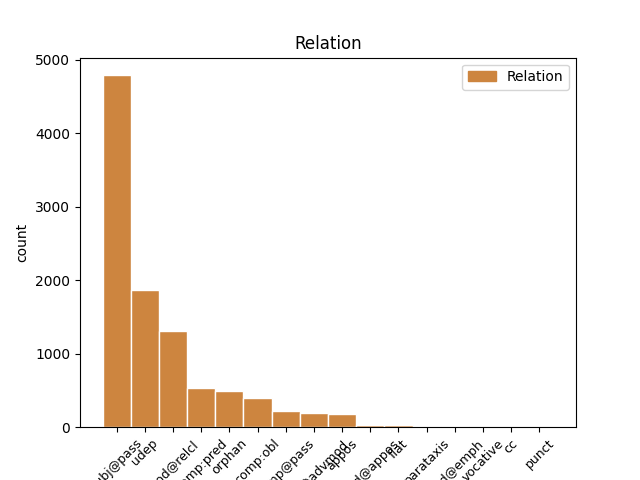
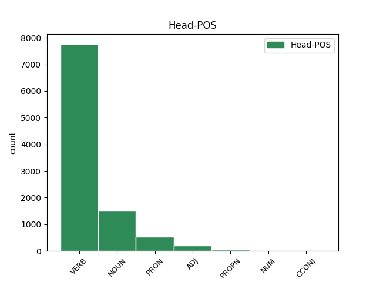
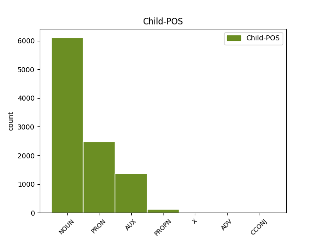

Distribution of features within this leaf



Agreement Rules sorted by frequency.
- When the dependent token is the subject(subj@pass) of the head token, and the head token is VERB and the dependent token is NOUN.
1 et _ _ _ _ 0 _ _ _
2 quanto _ _ _ _ 0 _ _ _
3 magis _ _ _ _ 0 _ _ _
4 proceditur _ _ _ _ 0 _ _ _
5 in _ _ _ _ 0 _ _ _
6 nobilitate _ _ _ _ 0 _ _ _
7 formarum _ _ _ _ 0 _ _ _
8 , _ _ _ _ 0 _ _ _
9 tanto _ _ _ _ 0 _ _ _
10 magis _ _ _ _ 0 _ _ _
11 invenitur invenio VERB M3|modJ|tem1|gen6|vgr1 Mood=Ind|Number=Sing|Person=3|Tense=Pres|VerbForm=Fin|Voice=Pass 0 _ _ _
12 virtus virtus NOUN C1|grn1|casA|gen2|vgr1 Case=Nom|Degree=Pos|Gender=Fem|Number=Sing 11 subj@pass _ _
13 formae _ _ _ _ 0 _ _ _
14 materiam _ _ _ _ 0 _ _ _
15 elementarem _ _ _ _ 0 _ _ _
16 excedere _ _ _ _ 0 _ _ _
17 , _ _ _ _ 0 _ _ _
18 sicut _ _ _ _ 0 _ _ _
19 anima _ _ _ _ 0 _ _ _
20 vegetabilis _ _ _ _ 0 _ _ _
21 plus _ _ _ _ 0 _ _ _
22 quam _ _ _ _ 0 _ _ _
23 forma _ _ _ _ 0 _ _ _
24 metalli _ _ _ _ 0 _ _ _
25 , _ _ _ _ 0 _ _ _
26 et _ _ _ _ 0 _ _ _
27 anima _ _ _ _ 0 _ _ _
28 sensibilis _ _ _ _ 0 _ _ _
29 plus _ _ _ _ 0 _ _ _
30 quam _ _ _ _ 0 _ _ _
31 anima _ _ _ _ 0 _ _ _
32 vegetabilis _ _ _ _ 0 _ _ _
33 . _ _ _ _ 0 _ _ _
1 unde _ _ _ _ 0 _ _ _
2 videmus _ _ _ _ 0 _ _ _
3 quod _ _ _ _ 0 _ _ _
4 forma _ _ _ _ 0 _ _ _
5 mixti _ _ _ _ 0 _ _ _
6 corporis _ _ _ _ 0 _ _ _
7 habet _ _ _ _ 0 _ _ _
8 aliquam _ _ _ _ 0 _ _ _
9 operationem _ _ _ _ 0 _ _ _
10 quae qui PRON F1|grn1|casA|gen2|vgr1 Case=Nom|Degree=Pos|Gender=Fem|Number=Sing|PronType=Rel 12 subj@pass _ _
11 non _ _ _ _ 0 _ _ _
12 causatur causo VERB J3|modJ|tem1|gen6 Mood=Ind|Number=Sing|Person=3|Tense=Pres|VerbForm=Fin|Voice=Pass 0 _ _ _
13 ex _ _ _ _ 0 _ _ _
14 qualitatibus _ _ _ _ 0 _ _ _
15 elementaribus _ _ _ _ 0 _ _ _
16 . _ _ _ _ 0 _ _ _
1 cum _ _ _ _ 0 _ _ _
2 enim _ _ _ _ 0 _ _ _
3 forma _ _ _ _ 0 _ _ _
4 sit _ _ _ _ 0 _ _ _
5 actus _ _ _ _ 0 _ _ _
6 , _ _ _ _ 0 _ _ _
7 materia _ _ _ _ 0 _ _ _
8 vero _ _ _ _ 0 _ _ _
9 sit _ _ _ _ 0 _ _ _
10 ens _ _ _ _ 0 _ _ _
11 in _ _ _ _ 0 _ _ _
12 potentia _ _ _ _ 0 _ _ _
13 tantum _ _ _ _ 0 _ _ _
14 ; _ _ _ _ 0 _ _ _
15 nullo _ _ _ _ 0 _ _ _
16 modo modus NOUN B1|grn1|casF|gen1 Case=Abl|Degree=Pos|Gender=Masc|Number=Sing 26 udep _ _
17 id _ _ _ _ 0 _ _ _
18 quod _ _ _ _ 0 _ _ _
19 est _ _ _ _ 0 _ _ _
20 ex _ _ _ _ 0 _ _ _
21 materia _ _ _ _ 0 _ _ _
22 et _ _ _ _ 0 _ _ _
23 forma _ _ _ _ 0 _ _ _
24 compositum _ _ _ _ 0 _ _ _
25 , _ _ _ _ 0 _ _ _
26 potest possum VERB N3|modA|tem1|gen6 Mood=Ind|Number=Sing|Person=3|Tense=Pres|VerbForm=Fin|VerbType=Mod|Voice=Act 0 _ _ _
27 esse _ _ _ _ 0 _ _ _
28 alterius _ _ _ _ 0 _ _ _
29 forma _ _ _ _ 0 _ _ _
30 secundum _ _ _ _ 0 _ _ _
31 se _ _ _ _ 0 _ _ _
32 totum _ _ _ _ 0 _ _ _
33 . _ _ _ _ 0 _ _ _
1 secundo _ _ _ _ 0 _ _ _
2 quia _ _ _ _ 0 _ _ _
3 , _ _ _ _ 0 _ _ _
4 cum _ _ _ _ 0 _ _ _
5 socrates _ _ _ _ 0 _ _ _
6 sit _ _ _ _ 0 _ _ _
7 quoddam _ _ _ _ 0 _ _ _
8 individuum _ _ _ _ 0 _ _ _
9 in _ _ _ _ 0 _ _ _
10 natura natura NOUN A1|grn1|casF|gen2 Case=Abl|Degree=Pos|Gender=Fem|Number=Sing 0 _ _ _
11 cuius _ _ _ _ 0 _ _ _
12 essentia _ _ _ _ 0 _ _ _
13 est sum AUX N3|modA|tem1|gen6 Mood=Ind|Number=Sing|Person=3|Tense=Pres|VerbForm=Fin|Voice=Act 10 mod@relcl _ _
14 una _ _ _ _ 0 _ _ _
15 , _ _ _ _ 0 _ _ _
16 composita _ _ _ _ 0 _ _ _
17 ex _ _ _ _ 0 _ _ _
18 materia _ _ _ _ 0 _ _ _
19 et _ _ _ _ 0 _ _ _
20 forma _ _ _ _ 0 _ _ _
21 ; _ _ _ _ 0 _ _ _
1 non _ _ _ _ 0 _ _ _
2 ergo _ _ _ _ 0 _ _ _
3 unitur unio VERB M3|modJ|tem1|gen6 Mood=Ind|Number=Sing|Person=3|Tense=Pres|VerbForm=Fin|Voice=Pass 0 _ _ _
4 corpori _ _ _ _ 0 _ _ _
5 ut _ _ _ _ 0 _ _ _
6 forma forma NOUN A1|grn1|casA|gen2 Case=Nom|Degree=Pos|Gender=Fem|Number=Sing 3 comp:pred _ SpaceAfter=No
7 . _ _ _ _ 0 _ _ _
1 si _ _ _ _ 0 _ _ _
2 autem _ _ _ _ 0 _ _ _
3 secundum _ _ _ _ 0 _ _ _
4 aliquid _ _ _ _ 0 _ _ _
5 sui _ _ _ _ 0 _ _ _
6 sit _ _ _ _ 0 _ _ _
7 forma _ _ _ _ 0 _ _ _
8 , _ _ _ _ 0 _ _ _
9 id _ _ _ _ 0 _ _ _
10 quod _ _ _ _ 0 _ _ _
11 est _ _ _ _ 0 _ _ _
12 forma _ _ _ _ 0 _ _ _
13 dicimus _ _ _ _ 0 _ _ _
14 animam _ _ _ _ 0 _ _ _
15 , _ _ _ _ 0 _ _ _
16 et _ _ _ _ 0 _ _ _
17 id is PRON F1|grn1|casD|gen3 Case=Acc|Degree=Pos|Gender=Neut|Number=Sing|PronType=Dem,Prs 0 _ _ _
18 cuius _ _ _ _ 0 _ _ _
19 est sum AUX N3|modA|tem1|gen6 Mood=Ind|Number=Sing|Person=3|Tense=Pres|VerbForm=Fin|Voice=Act 17 mod@relcl _ _
20 forma _ _ _ _ 0 _ _ _
21 dicimus _ _ _ _ 0 _ _ _
22 primum _ _ _ _ 0 _ _ _
23 animatum _ _ _ _ 0 _ _ _
24 , _ _ _ _ 0 _ _ _
25 ut _ _ _ _ 0 _ _ _
26 supra _ _ _ _ 0 _ _ _
27 dictum _ _ _ _ 0 _ _ _
28 est _ _ _ _ 0 _ _ _
29 . _ _ _ _ 0 _ _ _
1 illud _ _ _ _ 0 _ _ _
2 enim _ _ _ _ 0 _ _ _
3 quo _ _ _ _ 0 _ _ _
4 primo _ _ _ _ 0 _ _ _
5 aliquid _ _ _ _ 0 _ _ _
6 operatur _ _ _ _ 0 _ _ _
7 , _ _ _ _ 0 _ _ _
8 est _ _ _ _ 0 _ _ _
9 forma _ _ _ _ 0 _ _ _
10 eius _ _ _ _ 0 _ _ _
11 cui _ _ _ _ 0 _ _ _
12 operatio _ _ _ _ 0 _ _ _
13 attribuitur _ _ _ _ 0 _ _ _
14 , _ _ _ _ 0 _ _ _
15 sicut _ _ _ _ 0 _ _ _
16 quo _ _ _ _ 0 _ _ _
17 primo _ _ _ _ 0 _ _ _
18 sanatur _ _ _ _ 0 _ _ _
19 corpus _ _ _ _ 0 _ _ _
20 , _ _ _ _ 0 _ _ _
21 est _ _ _ _ 0 _ _ _
22 sanitas _ _ _ _ 0 _ _ _
23 , _ _ _ _ 0 _ _ _
24 et _ _ _ _ 0 _ _ _
25 quo qui PRON F1|grn1|casF|gen3 Case=Abl|Degree=Pos|Gender=Neut|Number=Sing|PronType=Rel 27 udep _ _
26 primo _ _ _ _ 0 _ _ _
27 scit scio VERB M3|modA|tem1|gen6 Mood=Ind|Number=Sing|Person=3|Tense=Pres|VerbForm=Fin|Voice=Act 0 _ _ _
28 anima _ _ _ _ 0 _ _ _
29 , _ _ _ _ 0 _ _ _
30 est _ _ _ _ 0 _ _ _
31 scientia _ _ _ _ 0 _ _ _
32 ; _ _ _ _ 0 _ _ _
1 unde _ _ _ _ 0 _ _ _
2 sanitas _ _ _ _ 0 _ _ _
3 est _ _ _ _ 0 _ _ _
4 forma _ _ _ _ 0 _ _ _
5 corporis _ _ _ _ 0 _ _ _
6 , _ _ _ _ 0 _ _ _
7 et _ _ _ _ 0 _ _ _
8 scientia scientia NOUN A1|grn1|casA|gen2|vgr1 Case=Nom|Degree=Pos|Gender=Fem|Number=Sing 0 _ _ _
9 animae anima NOUN F1|grn1|casB|gen2|vgr1 Case=Gen|Degree=Pos|Gender=Fem|Number=Sing 8 orphan _ SpaceAfter=No
10 . _ _ _ _ 0 _ _ _
1 ad _ _ _ _ 0 _ _ _
2 primum _ _ _ _ 0 _ _ _
3 ergo _ _ _ _ 0 _ _ _
4 dicendum _ _ _ _ 0 _ _ _
5 quod _ _ _ _ 0 _ _ _
6 , _ _ _ _ 0 _ _ _
7 cum _ _ _ _ 0 _ _ _
8 qualitas _ _ _ _ 0 _ _ _
9 consequatur _ _ _ _ 0 _ _ _
10 formam _ _ _ _ 0 _ _ _
11 substantialem _ _ _ _ 0 _ _ _
12 , _ _ _ _ 0 _ _ _
13 diversimode _ _ _ _ 0 _ _ _
14 se _ _ _ _ 0 _ _ _
15 habet _ _ _ _ 0 _ _ _
16 subiectum _ _ _ _ 0 _ _ _
17 ad _ _ _ _ 0 _ _ _
18 receptionem _ _ _ _ 0 _ _ _
19 qualitatis _ _ _ _ 0 _ _ _
20 , _ _ _ _ 0 _ _ _
21 sicut _ _ _ _ 0 _ _ _
22 se se PRON F1|grn1|casD|gen3 Case=Acc|Degree=Pos|Gender=Neut|Number=Sing|PronType=Prs|Reflex=Yes 23 comp@pass _ _
23 habet habeo VERB K3|modA|tem1|gen6 Mood=Ind|Number=Sing|Person=3|Tense=Pres|VerbForm=Fin|Voice=Act 0 _ _ _
24 ad _ _ _ _ 0 _ _ _
25 receptionem _ _ _ _ 0 _ _ _
26 formae _ _ _ _ 0 _ _ _
27 . _ _ _ _ 0 _ _ _
1 sic _ _ _ _ 0 _ _ _
2 ergo _ _ _ _ 0 _ _ _
3 ex _ _ _ _ 0 _ _ _
4 ipsa _ _ _ _ 0 _ _ _
5 operatione _ _ _ _ 0 _ _ _
6 intellectus _ _ _ _ 0 _ _ _
7 apparet _ _ _ _ 0 _ _ _
8 quod _ _ _ _ 0 _ _ _
9 intellectivum _ _ _ _ 0 _ _ _
10 principium principium NOUN B1|grn1|casA|gen3 Case=Nom|Degree=Pos|Gender=Neut|Number=Sing 0 _ _ _
11 unitur _ _ _ _ 0 _ _ _
12 corpori _ _ _ _ 0 _ _ _
13 ut _ _ _ _ 0 _ _ _
14 forma forma NOUN A1|grn1|casA|gen2 Case=Nom|Degree=Pos|Gender=Fem|Number=Sing 10 mod@advmod _ SpaceAfter=No
15 . _ _ _ _ 0 _ _ _
1 ad _ _ _ _ 0 _ _ _
2 hoc _ _ _ _ 0 _ _ _
3 autem _ _ _ _ 0 _ _ _
4 quod _ _ _ _ 0 _ _ _
5 moveat _ _ _ _ 0 _ _ _
6 , _ _ _ _ 0 _ _ _
7 non _ _ _ _ 0 _ _ _
8 oportet _ _ _ _ 0 _ _ _
9 quod _ _ _ _ 0 _ _ _
10 uniatur unio VERB M3|modK|tem1|gen6 Mood=Sub|Number=Sing|Person=3|Tense=Pres|VerbForm=Fin|Voice=Pass 0 _ _ _
11 ei is PRON F1|grn1|casC|gen1 Case=Dat|Degree=Pos|Gender=Masc|Number=Sing|PronType=Dem,Prs 10 comp:obl _ _
12 ut _ _ _ _ 0 _ _ _
13 forma _ _ _ _ 0 _ _ _
14 ; _ _ _ _ 0 _ _ _
1 non _ _ _ _ 0 _ _ _
2 ergo _ _ _ _ 0 _ _ _
3 unitur unio VERB M3|modJ|tem1|gen6 Mood=Ind|Number=Sing|Person=3|Tense=Pres|VerbForm=Fin|Voice=Pass 0 _ _ _
4 corpori corpus NOUN C1|grn1|casC|gen3 Case=Dat|Degree=Pos|Gender=Neut|Number=Sing 3 comp:obl _ _
5 ut _ _ _ _ 0 _ _ _
6 forma _ _ _ _ 0 _ _ _
7 . _ _ _ _ 0 _ _ _
1 sed _ _ _ _ 0 _ _ _
2 omnium _ _ _ _ 0 _ _ _
3 corporum _ _ _ _ 0 _ _ _
4 est _ _ _ _ 0 _ _ _
5 una _ _ _ _ 0 _ _ _
6 forma forma NOUN A1|grn1|casA|gen2 Case=Nom|Degree=Pos|Gender=Fem|Number=Sing 0 _ _ _
7 , _ _ _ _ 0 _ _ _
8 scilicet _ _ _ _ 0 _ _ _
9 corporeitas corporeitas NOUN C1|grn1|casA|gen2 Case=Nom|Degree=Pos|Gender=Fem|Number=Sing 6 appos _ SpaceAfter=No
10 . _ _ _ _ 0 _ _ _
1 et _ _ _ _ 0 _ _ _
2 ideo _ _ _ _ 0 _ _ _
3 per _ _ _ _ 0 _ _ _
4 congregationem _ _ _ _ 0 _ _ _
5 aquarum _ _ _ _ 0 _ _ _
6 et _ _ _ _ 0 _ _ _
7 apparentiam _ _ _ _ 0 _ _ _
8 aridae _ _ _ _ 0 _ _ _
9 , _ _ _ _ 0 _ _ _
10 impressio _ _ _ _ 0 _ _ _
11 talium _ _ _ _ 0 _ _ _
12 formarum _ _ _ _ 0 _ _ _
13 designatur _ _ _ _ 0 _ _ _
14 , _ _ _ _ 0 _ _ _
15 aqua _ _ _ _ 0 _ _ _
16 enim _ _ _ _ 0 _ _ _
17 est _ _ _ _ 0 _ _ _
18 labiliter _ _ _ _ 0 _ _ _
19 fluxa _ _ _ _ 0 _ _ _
20 , _ _ _ _ 0 _ _ _
21 terra terra NOUN A1|grn1|casA|gen2 Case=Nom|Degree=Pos|Gender=Fem|Number=Sing 23 orphan _ _
22 stabiliter _ _ _ _ 0 _ _ _
23 fixa figo VERB L2|modM|tem4|grp1|casA|gen2 Aspect=Perf|Case=Nom|Degree=Pos|Gender=Fem|Number=Sing|Tense=Past|VerbForm=Part|Voice=Pass 0 _ _ _
24 , _ _ _ _ 0 _ _ _
25 ut _ _ _ _ 0 _ _ _
26 ipse _ _ _ _ 0 _ _ _
27 dicit _ _ _ _ 0 _ _ _
28 in _ _ _ _ 0 _ _ _
29 ii _ _ _ _ 0 _ _ _
30 super _ _ _ _ 0 _ _ _
31 gen. _ _ _ _ 0 _ _ _
32 ad _ _ _ _ 0 _ _ _
33 litt. _ _ _ _ 0 _ _ _
34 . _ _ _ _ 0 _ _ _
1 ita _ _ _ _ 0 _ _ _
2 eius _ _ _ _ 0 _ _ _
3 corpus _ _ _ _ 0 _ _ _
4 sublimabitur _ _ _ _ 0 _ _ _
5 ad _ _ _ _ 0 _ _ _
6 proprietates _ _ _ _ 0 _ _ _
7 caelestium _ _ _ _ 0 _ _ _
8 corporum _ _ _ _ 0 _ _ _
9 , _ _ _ _ 0 _ _ _
10 inquantum _ _ _ _ 0 _ _ _
11 erit _ _ _ _ 0 _ _ _
12 clarum _ _ _ _ 0 _ _ _
13 , _ _ _ _ 0 _ _ _
14 impassibile _ _ _ _ 0 _ _ _
15 , _ _ _ _ 0 _ _ _
16 absque _ _ _ _ 0 _ _ _
17 difficultate _ _ _ _ 0 _ _ _
18 et _ _ _ _ 0 _ _ _
19 labore _ _ _ _ 0 _ _ _
20 mobile _ _ _ _ 0 _ _ _
21 , _ _ _ _ 0 _ _ _
22 et _ _ _ _ 0 _ _ _
23 perfectissime _ _ _ _ 0 _ _ _
24 sua _ _ _ _ 0 _ _ _
25 forma forma NOUN A1|grn1|casF|gen2 Case=Abl|Degree=Pos|Gender=Fem|Number=Sing 26 udep _ _
26 perfectum perfectus ADJ B1|grn1|casA|gen3 Case=Nom|Degree=Pos|Gender=Neut|Number=Sing 0 _ _ _
27 . _ _ _ _ 0 _ _ _
1 praeterea _ _ _ _ 0 _ _ _
2 , _ _ _ _ 0 _ _ _
3 id is PRON F1|grn1|casA|gen3 Case=Nom|Degree=Pos|Gender=Neut|Number=Sing|PronType=Dem,Prs 0 _ _ _
4 quod _ _ _ _ 0 _ _ _
5 per _ _ _ _ 0 _ _ _
6 se _ _ _ _ 0 _ _ _
7 habet _ _ _ _ 0 _ _ _
8 esse _ _ _ _ 0 _ _ _
9 , _ _ _ _ 0 _ _ _
10 non _ _ _ _ 0 _ _ _
11 unitur _ _ _ _ 0 _ _ _
12 corpori _ _ _ _ 0 _ _ _
13 ut _ _ _ _ 0 _ _ _
14 forma forma NOUN A1|grn1|casA|gen2 Case=Nom|Degree=Pos|Gender=Fem|Number=Sing 3 mod@advmod _ SpaceAfter=No
15 , _ _ _ _ 0 _ _ _
16 quia _ _ _ _ 0 _ _ _
17 forma _ _ _ _ 0 _ _ _
18 est _ _ _ _ 0 _ _ _
19 quo _ _ _ _ 0 _ _ _
20 aliquid _ _ _ _ 0 _ _ _
21 est _ _ _ _ 0 _ _ _
22 ; _ _ _ _ 0 _ _ _
1 ad _ _ _ _ 0 _ _ _
2 octavum _ _ _ _ 0 _ _ _
3 dicendum _ _ _ _ 0 _ _ _
4 , _ _ _ _ 0 _ _ _
5 quod _ _ _ _ 0 _ _ _
6 in _ _ _ _ 0 _ _ _
7 visione _ _ _ _ 0 _ _ _
8 qua _ _ _ _ 0 _ _ _
9 deus deus PROPN F1|grn1|casA|gen1 Case=Nom|Degree=Pos|Gender=Masc|Number=Sing 12 subj@pass _ _
10 per _ _ _ _ 0 _ _ _
11 essentiam _ _ _ _ 0 _ _ _
12 videbitur video VERB K3|modJ|tem3|gen6|vgr1 Mood=Ind|Number=Sing|Person=3|Tense=Fut|VerbForm=Fin|Voice=Pass 0 _ _ _
13 , _ _ _ _ 0 _ _ _
14 ipsa _ _ _ _ 0 _ _ _
15 divina _ _ _ _ 0 _ _ _
16 essentia _ _ _ _ 0 _ _ _
17 erit _ _ _ _ 0 _ _ _
18 quasi _ _ _ _ 0 _ _ _
19 forma _ _ _ _ 0 _ _ _
20 intellectus _ _ _ _ 0 _ _ _
21 quae _ _ _ _ 0 _ _ _
22 intelligit _ _ _ _ 0 _ _ _
23 ; _ _ _ _ 0 _ _ _
1 secundo _ _ _ _ 0 _ _ _
2 , _ _ _ _ 0 _ _ _
3 supposito _ _ _ _ 0 _ _ _
4 quod _ _ _ _ 0 _ _ _
5 angelus _ _ _ _ 0 _ _ _
6 sit _ _ _ _ 0 _ _ _
7 talis _ _ _ _ 0 _ _ _
8 , _ _ _ _ 0 _ _ _
9 quaeritur quaero VERB L3|modJ|tem1|gen6 Mood=Ind|Number=Sing|Person=3|Tense=Pres|VerbForm=Fin|Voice=Pass 0 _ _ _
10 utrum _ _ _ _ 0 _ _ _
11 angelus _ _ _ _ 0 _ _ _
12 sit sum AUX N3|modB|tem1|gen6 Mood=Sub|Number=Sing|Person=3|Tense=Pres|VerbForm=Fin|Voice=Act 9 subj@pass _ _
13 compositus _ _ _ _ 0 _ _ _
14 ex _ _ _ _ 0 _ _ _
15 materia _ _ _ _ 0 _ _ _
16 et _ _ _ _ 0 _ _ _
17 forma _ _ _ _ 0 _ _ _
18 . _ _ _ _ 0 _ _ _
1 corpus _ _ _ _ 0 _ _ _
2 autem _ _ _ _ 0 _ _ _
3 humanum _ _ _ _ 0 _ _ _
4 praeter _ _ _ _ 0 _ _ _
5 hanc _ _ _ _ 0 _ _ _
6 formam _ _ _ _ 0 _ _ _
7 mixtionis _ _ _ _ 0 _ _ _
8 non _ _ _ _ 0 _ _ _
9 habet _ _ _ _ 0 _ _ _
10 aliam _ _ _ _ 0 _ _ _
11 formam _ _ _ _ 0 _ _ _
12 substantialem _ _ _ _ 0 _ _ _
13 nisi _ _ _ _ 0 _ _ _
14 animam _ _ _ _ 0 _ _ _
15 rationalem _ _ _ _ 0 _ _ _
16 : _ _ _ _ 0 _ _ _
17 quia _ _ _ _ 0 _ _ _
18 si _ _ _ _ 0 _ _ _
19 haberet _ _ _ _ 0 _ _ _
20 aliam _ _ _ _ 0 _ _ _
21 formam _ _ _ _ 0 _ _ _
22 substantialem _ _ _ _ 0 _ _ _
23 priorem prior ADJ C1|grn2|casD|gen2 Case=Acc|Degree=Cmp|Gender=Fem|Number=Sing|NumType=Ord 0 _ _ _
24 illa ille PRON F1|grn1|casF|gen2 Case=Abl|Degree=Pos|Gender=Fem|Number=Sing|PronType=Dem 23 udep _ SpaceAfter=No
25 , _ _ _ _ 0 _ _ _
26 daret _ _ _ _ 0 _ _ _
27 ei _ _ _ _ 0 _ _ _
28 esse _ _ _ _ 0 _ _ _
29 substantiale _ _ _ _ 0 _ _ _
30 , _ _ _ _ 0 _ _ _
31 et _ _ _ _ 0 _ _ _
32 sic _ _ _ _ 0 _ _ _
33 per _ _ _ _ 0 _ _ _
34 eam _ _ _ _ 0 _ _ _
35 constitueretur _ _ _ _ 0 _ _ _
36 in _ _ _ _ 0 _ _ _
37 genere _ _ _ _ 0 _ _ _
38 substantiae _ _ _ _ 0 _ _ _
39 ; _ _ _ _ 0 _ _ _
1 et _ _ _ _ 0 _ _ _
2 ideo _ _ _ _ 0 _ _ _
3 alii _ _ _ _ 0 _ _ _
4 dixerunt _ _ _ _ 0 _ _ _
5 , _ _ _ _ 0 _ _ _
6 quod _ _ _ _ 0 _ _ _
7 etiam _ _ _ _ 0 _ _ _
8 praecisi _ _ _ _ 0 _ _ _
9 ab _ _ _ _ 0 _ _ _
10 ecclesia _ _ _ _ 0 _ _ _
11 possunt _ _ _ _ 0 _ _ _
12 ordines _ _ _ _ 0 _ _ _
13 et _ _ _ _ 0 _ _ _
14 alia _ _ _ _ 0 _ _ _
15 sacramenta _ _ _ _ 0 _ _ _
16 conferre _ _ _ _ 0 _ _ _
17 , _ _ _ _ 0 _ _ _
18 dummodo _ _ _ _ 0 _ _ _
19 formam _ _ _ _ 0 _ _ _
20 debitam _ _ _ _ 0 _ _ _
21 et _ _ _ _ 0 _ _ _
22 intentionem _ _ _ _ 0 _ _ _
23 servent _ _ _ _ 0 _ _ _
24 , _ _ _ _ 0 _ _ _
25 et _ _ _ _ 0 _ _ _
26 quantum _ _ _ _ 0 _ _ _
27 ad _ _ _ _ 0 _ _ _
28 primum _ _ _ _ 0 _ _ _
29 effectum _ _ _ _ 0 _ _ _
30 , _ _ _ _ 0 _ _ _
31 qui _ _ _ _ 0 _ _ _
32 est _ _ _ _ 0 _ _ _
33 collatio _ _ _ _ 0 _ _ _
34 sacramenti _ _ _ _ 0 _ _ _
35 , _ _ _ _ 0 _ _ _
36 et _ _ _ _ 0 _ _ _
37 quantum _ _ _ _ 0 _ _ _
38 ad _ _ _ _ 0 _ _ _
39 ultimum ultimus ADJ B1|grn3|casD|gen1 Case=Acc|Degree=Abs|Gender=Masc|Number=Sing 0 _ _ _
40 , _ _ _ _ 0 _ _ _
41 qui _ _ _ _ 0 _ _ _
42 est sum AUX N3|modA|tem1|gen6 Mood=Ind|Number=Sing|Person=3|Tense=Pres|VerbForm=Fin|Voice=Act 39 mod@relcl _ _
43 collatio _ _ _ _ 0 _ _ _
44 gratiae _ _ _ _ 0 _ _ _
45 ; _ _ _ _ 0 _ _ _
1 praeterea _ _ _ _ 0 _ _ _
2 , _ _ _ _ 0 _ _ _
3 omne _ _ _ _ 0 _ _ _
4 quod _ _ _ _ 0 _ _ _
5 habet _ _ _ _ 0 _ _ _
6 formam _ _ _ _ 0 _ _ _
7 in _ _ _ _ 0 _ _ _
8 materia _ _ _ _ 0 _ _ _
9 , _ _ _ _ 0 _ _ _
10 potest _ _ _ _ 0 _ _ _
11 multiplicari _ _ _ _ 0 _ _ _
12 secundum _ _ _ _ 0 _ _ _
13 numerum _ _ _ _ 0 _ _ _
14 , _ _ _ _ 0 _ _ _
15 manente maneo VERB K2|modD|tem1|grp1|casF|gen2 Case=Abl|Degree=Pos|Gender=Fem|Number=Sing|Tense=Pres|VerbForm=Part|Voice=Act 0 _ _ _
16 eadem idem PRON F1|grn1|casF|gen2 Case=Abl|Degree=Pos|Gender=Fem|Number=Sing|PronType=Dem,Prs 15 comp:pred _ _
17 specie _ _ _ _ 0 _ _ _
18 , _ _ _ _ 0 _ _ _
19 quia _ _ _ _ 0 _ _ _
20 multiplicatio _ _ _ _ 0 _ _ _
21 secundum _ _ _ _ 0 _ _ _
22 numerum _ _ _ _ 0 _ _ _
23 est _ _ _ _ 0 _ _ _
24 ex _ _ _ _ 0 _ _ _
25 materia _ _ _ _ 0 _ _ _
26 . _ _ _ _ 0 _ _ _
1 artifex _ _ _ _ 0 _ _ _
2 enim _ _ _ _ 0 _ _ _
3 per _ _ _ _ 0 _ _ _
4 formam _ _ _ _ 0 _ _ _
5 domus _ _ _ _ 0 _ _ _
6 facit _ _ _ _ 0 _ _ _
7 omnia _ _ _ _ 0 _ _ _
8 accidentia _ _ _ _ 0 _ _ _
9 quae _ _ _ _ 0 _ _ _
10 a _ _ _ _ 0 _ _ _
11 principio _ _ _ _ 0 _ _ _
12 concomitantur _ _ _ _ 0 _ _ _
13 domum _ _ _ _ 0 _ _ _
14 , _ _ _ _ 0 _ _ _
15 sed _ _ _ _ 0 _ _ _
16 ea _ _ _ _ 0 _ _ _
17 quae qui PRON F1|grn1|casJ|gen3|vgr1 Case=Nom|Degree=Pos|Gender=Neut|Number=Plur|PronType=Rel 0 _ _ _
18 superveniunt _ _ _ _ 0 _ _ _
19 domui _ _ _ _ 0 _ _ _
20 iam _ _ _ _ 0 _ _ _
21 factae _ _ _ _ 0 _ _ _
22 , _ _ _ _ 0 _ _ _
23 ut _ _ _ _ 0 _ _ _
24 picturae pictura NOUN A1|grn1|casJ|gen2 Case=Nom|Degree=Pos|Gender=Fem|Number=Plur 17 appos _ _
25 vel _ _ _ _ 0 _ _ _
26 aliquid _ _ _ _ 0 _ _ _
27 aliud _ _ _ _ 0 _ _ _
28 , _ _ _ _ 0 _ _ _
29 facit _ _ _ _ 0 _ _ _
30 per _ _ _ _ 0 _ _ _
31 aliquam _ _ _ _ 0 _ _ _
32 aliam _ _ _ _ 0 _ _ _
33 formam _ _ _ _ 0 _ _ _
34 . _ _ _ _ 0 _ _ _
1 deus deus PROPN F1|grn1|casA|gen1 Case=Nom|Degree=Pos|Gender=Masc|Number=Sing 0 _ _ _
2 autem _ _ _ _ 0 _ _ _
3 , _ _ _ _ 0 _ _ _
4 qui _ _ _ _ 0 _ _ _
5 totius _ _ _ _ 0 _ _ _
6 rei _ _ _ _ 0 _ _ _
7 auctor _ _ _ _ 0 _ _ _
8 est sum AUX N3|modA|tem1|gen6 Mood=Ind|Number=Sing|Person=3|Tense=Pres|VerbForm=Fin|Voice=Act 1 mod@relcl _ SpaceAfter=No
9 , _ _ _ _ 0 _ _ _
10 non _ _ _ _ 0 _ _ _
11 solum _ _ _ _ 0 _ _ _
12 formas _ _ _ _ 0 _ _ _
13 et _ _ _ _ 0 _ _ _
14 virtutes _ _ _ _ 0 _ _ _
15 naturales _ _ _ _ 0 _ _ _
16 rebus _ _ _ _ 0 _ _ _
17 contulit _ _ _ _ 0 _ _ _
18 , _ _ _ _ 0 _ _ _
19 sed _ _ _ _ 0 _ _ _
20 etiam _ _ _ _ 0 _ _ _
21 potentiam _ _ _ _ 0 _ _ _
22 recipiendi _ _ _ _ 0 _ _ _
23 illud _ _ _ _ 0 _ _ _
24 quod _ _ _ _ 0 _ _ _
25 ipse _ _ _ _ 0 _ _ _
26 in _ _ _ _ 0 _ _ _
27 materia _ _ _ _ 0 _ _ _
28 facere _ _ _ _ 0 _ _ _
29 vult _ _ _ _ 0 _ _ _
30 . _ _ _ _ 0 _ _ _
1 est _ _ _ _ 0 _ _ _
2 enim _ _ _ _ 0 _ _ _
3 forma _ _ _ _ 0 _ _ _
4 impressio _ _ _ _ 0 _ _ _
5 generantis genero VERB J2|modD|tem1|grp1|casB|gen3 Case=Gen|Degree=Pos|Gender=Neut|Number=Sing|Tense=Pres|VerbForm=Part|Voice=Act 0 _ _ _
6 , _ _ _ _ 0 _ _ _
7 quod _ _ _ _ 0 _ _ _
8 est sum AUX N3|modA|tem1|gen6 Mood=Ind|Number=Sing|Person=3|Tense=Pres|VerbForm=Fin|Voice=Act 5 mod@relcl _ _
9 motor _ _ _ _ 0 _ _ _
10 per _ _ _ _ 0 _ _ _
11 se _ _ _ _ 0 _ _ _
12 gravium _ _ _ _ 0 _ _ _
13 et _ _ _ _ 0 _ _ _
14 levium _ _ _ _ 0 _ _ _
15 . _ _ _ _ 0 _ _ _
1 ad _ _ _ _ 0 _ _ _
2 tertium _ _ _ _ 0 _ _ _
3 dicendum _ _ _ _ 0 _ _ _
4 quod _ _ _ _ 0 _ _ _
5 forma _ _ _ _ 0 _ _ _
6 est _ _ _ _ 0 _ _ _
7 causa causa NOUN A1|grn1|casA|gen2|vgr1 Case=Nom|Degree=Pos|Gender=Fem|Number=Sing 0 _ _ _
8 essendi _ _ _ _ 0 _ _ _
9 materiae materia NOUN A1|grn1|casC|gen2|vgr1 Case=Dat|Degree=Pos|Gender=Fem|Number=Sing 7 udep _ SpaceAfter=No
10 , _ _ _ _ 0 _ _ _
11 et _ _ _ _ 0 _ _ _
12 agens _ _ _ _ 0 _ _ _
13 , _ _ _ _ 0 _ _ _
14 unde _ _ _ _ 0 _ _ _
15 agens _ _ _ _ 0 _ _ _
16 , _ _ _ _ 0 _ _ _
17 inquantum _ _ _ _ 0 _ _ _
18 reducit _ _ _ _ 0 _ _ _
19 materiam _ _ _ _ 0 _ _ _
20 in _ _ _ _ 0 _ _ _
21 actum _ _ _ _ 0 _ _ _
22 formae _ _ _ _ 0 _ _ _
23 transmutando _ _ _ _ 0 _ _ _
24 , _ _ _ _ 0 _ _ _
25 est _ _ _ _ 0 _ _ _
26 ei _ _ _ _ 0 _ _ _
27 causa _ _ _ _ 0 _ _ _
28 essendi _ _ _ _ 0 _ _ _
29 . _ _ _ _ 0 _ _ _
1 ad _ _ _ _ 0 _ _ _
2 primum _ _ _ _ 0 _ _ _
3 ergo _ _ _ _ 0 _ _ _
4 dicendum _ _ _ _ 0 _ _ _
5 quod _ _ _ _ 0 _ _ _
6 hoc _ _ _ _ 0 _ _ _
7 nomen nomen NOUN C1|grn1|casA|gen3 Case=Nom|Degree=Pos|Gender=Neut|Number=Sing 0 _ _ _
8 deus deus PROPN F1|grn1|casA|gen1 Case=Nom|Degree=Pos|Gender=Masc|Number=Sing 7 flat _ SpaceAfter=No
9 , _ _ _ _ 0 _ _ _
10 licet _ _ _ _ 0 _ _ _
11 conveniat _ _ _ _ 0 _ _ _
12 cum _ _ _ _ 0 _ _ _
13 terminis _ _ _ _ 0 _ _ _
14 singularibus _ _ _ _ 0 _ _ _
15 in _ _ _ _ 0 _ _ _
16 hoc _ _ _ _ 0 _ _ _
17 , _ _ _ _ 0 _ _ _
18 quod _ _ _ _ 0 _ _ _
19 forma _ _ _ _ 0 _ _ _
20 significata _ _ _ _ 0 _ _ _
21 non _ _ _ _ 0 _ _ _
22 multiplicatur _ _ _ _ 0 _ _ _
23 ; _ _ _ _ 0 _ _ _
24 convenit _ _ _ _ 0 _ _ _
25 tamen _ _ _ _ 0 _ _ _
26 cum _ _ _ _ 0 _ _ _
27 terminis _ _ _ _ 0 _ _ _
28 communibus _ _ _ _ 0 _ _ _
29 in _ _ _ _ 0 _ _ _
30 hoc _ _ _ _ 0 _ _ _
31 , _ _ _ _ 0 _ _ _
32 quod _ _ _ _ 0 _ _ _
33 forma _ _ _ _ 0 _ _ _
34 significata _ _ _ _ 0 _ _ _
35 invenitur _ _ _ _ 0 _ _ _
36 in _ _ _ _ 0 _ _ _
37 pluribus _ _ _ _ 0 _ _ _
38 suppositis _ _ _ _ 0 _ _ _
39 . _ _ _ _ 0 _ _ _
1 ne _ _ _ _ 0 _ _ _
2 forte _ _ _ _ 0 _ _ _
3 videant _ _ _ _ 0 _ _ _
4 oculis _ _ _ _ 0 _ _ _
5 suis _ _ _ _ 0 _ _ _
6 et _ _ _ _ 0 _ _ _
7 convertantur _ _ _ _ 0 _ _ _
8 , _ _ _ _ 0 _ _ _
9 et _ _ _ _ 0 _ _ _
10 sanem _ _ _ _ 0 _ _ _
11 eos _ _ _ _ 0 _ _ _
12 et _ _ _ _ 0 _ _ _
13 isaiae isaia PROPN A1|grn1|casC|gen1|vgr1 Case=Dat|Degree=Pos|Gender=Masc|Number=Sing 18 udep _ _
14 63-17 _ _ _ _ 0 _ _ _
15 , _ _ _ _ 0 _ _ _
16 errare _ _ _ _ 0 _ _ _
17 nos _ _ _ _ 0 _ _ _
18 fecisti facio VERB N3|modA|tem4|gen5 Aspect=Perf|Mood=Ind|Number=Sing|Person=2|Tense=Past|VerbForm=Fin|Voice=Act 0 _ _ _
19 de _ _ _ _ 0 _ _ _
20 viis _ _ _ _ 0 _ _ _
21 tuis _ _ _ _ 0 _ _ _
22 , _ _ _ _ 0 _ _ _
23 indurasti _ _ _ _ 0 _ _ _
24 cor _ _ _ _ 0 _ _ _
25 nostrum _ _ _ _ 0 _ _ _
26 , _ _ _ _ 0 _ _ _
27 ne _ _ _ _ 0 _ _ _
28 timeremus _ _ _ _ 0 _ _ _
29 te _ _ _ _ 0 _ _ _
30 . _ _ _ _ 0 _ _ _
1 quamvis _ _ _ _ 0 _ _ _
2 autem _ _ _ _ 0 _ _ _
3 animabus _ _ _ _ 0 _ _ _
4 post _ _ _ _ 0 _ _ _
5 mortem _ _ _ _ 0 _ _ _
6 non _ _ _ _ 0 _ _ _
7 assignentur _ _ _ _ 0 _ _ _
8 aliqua _ _ _ _ 0 _ _ _
9 corpora _ _ _ _ 0 _ _ _
10 , _ _ _ _ 0 _ _ _
11 quorum _ _ _ _ 0 _ _ _
12 sint _ _ _ _ 0 _ _ _
13 formae _ _ _ _ 0 _ _ _
14 vel _ _ _ _ 0 _ _ _
15 determinati _ _ _ _ 0 _ _ _
16 motores _ _ _ _ 0 _ _ _
17 ; _ _ _ _ 0 _ _ _
18 determinantur _ _ _ _ 0 _ _ _
19 tamen _ _ _ _ 0 _ _ _
20 eis _ _ _ _ 0 _ _ _
21 quaedam _ _ _ _ 0 _ _ _
22 corporalia _ _ _ _ 0 _ _ _
23 loca _ _ _ _ 0 _ _ _
24 per _ _ _ _ 0 _ _ _
25 congruentiam _ _ _ _ 0 _ _ _
26 quamdam _ _ _ _ 0 _ _ _
27 secundum _ _ _ _ 0 _ _ _
28 gradus _ _ _ _ 0 _ _ _
29 dignitatis _ _ _ _ 0 _ _ _
30 eorum _ _ _ _ 0 _ _ _
31 , _ _ _ _ 0 _ _ _
32 in _ _ _ _ 0 _ _ _
33 quibus _ _ _ _ 0 _ _ _
34 sunt _ _ _ _ 0 _ _ _
35 quasi _ _ _ _ 0 _ _ _
36 in _ _ _ _ 0 _ _ _
37 loco _ _ _ _ 0 _ _ _
38 , _ _ _ _ 0 _ _ _
39 eo _ _ _ _ 0 _ _ _
40 modo _ _ _ _ 0 _ _ _
41 quo _ _ _ _ 0 _ _ _
42 incorporalia _ _ _ _ 0 _ _ _
43 in _ _ _ _ 0 _ _ _
44 loco _ _ _ _ 0 _ _ _
45 esse _ _ _ _ 0 _ _ _
46 possunt _ _ _ _ 0 _ _ _
47 , _ _ _ _ 0 _ _ _
48 secundum _ _ _ _ 0 _ _ _
49 quod _ _ _ _ 0 _ _ _
50 magis _ _ _ _ 0 _ _ _
51 accedent _ _ _ _ 0 _ _ _
52 ad _ _ _ _ 0 _ _ _
53 primam _ _ _ _ 0 _ _ _
54 substantiam substantia NOUN A1|grn1|casD|gen2|vgr1 Case=Acc|Degree=Pos|Gender=Fem|Number=Sing 0 _ _ _
55 ( _ _ _ _ 0 _ _ _
56 cui _ _ _ _ 0 _ _ _
57 locus _ _ _ _ 0 _ _ _
58 superior _ _ _ _ 0 _ _ _
59 per _ _ _ _ 0 _ _ _
60 congruentiam _ _ _ _ 0 _ _ _
61 deputatur _ _ _ _ 0 _ _ _
62 ) _ _ _ _ 0 _ _ _
63 scilicet _ _ _ _ 0 _ _ _
64 deum deus PROPN F1|grn1|casD|gen1 Case=Acc|Degree=Pos|Gender=Masc|Number=Sing 54 appos _ SpaceAfter=No
65 , _ _ _ _ 0 _ _ _
66 cujus _ _ _ _ 0 _ _ _
67 sedem _ _ _ _ 0 _ _ _
68 caelum _ _ _ _ 0 _ _ _
69 scriptura _ _ _ _ 0 _ _ _
70 esse _ _ _ _ 0 _ _ _
71 denuntiat _ _ _ _ 0 _ _ _
72 ; _ _ _ _ 0 _ _ _
1 sicut _ _ _ _ 0 _ _ _
2 isaias _ _ _ _ 0 _ _ _
3 praenuntiavit praenuncio VERB J3|modA|tem4|gen6|vgr2 Aspect=Perf|Mood=Ind|Number=Sing|Person=3|Tense=Past|VerbForm=Fin|Voice=Act 0 _ _ _
4 ezechiae ezechias PROPN A1|grn1|casC|gen1 Case=Dat|Degree=Pos|Gender=Masc|Number=Sing 3 comp:obl _ _
5 aegrotanti _ _ _ _ 0 _ _ _
6 , _ _ _ _ 0 _ _ _
7 dispone _ _ _ _ 0 _ _ _
8 domui _ _ _ _ 0 _ _ _
9 tuae _ _ _ _ 0 _ _ _
10 , _ _ _ _ 0 _ _ _
11 quia _ _ _ _ 0 _ _ _
12 morieris _ _ _ _ 0 _ _ _
13 et _ _ _ _ 0 _ _ _
14 non _ _ _ _ 0 _ _ _
15 vives _ _ _ _ 0 _ _ _
16 , _ _ _ _ 0 _ _ _
17 qui _ _ _ _ 0 _ _ _
18 tamen _ _ _ _ 0 _ _ _
19 sanatus _ _ _ _ 0 _ _ _
20 est _ _ _ _ 0 _ _ _
21 ; _ _ _ _ 0 _ _ _
22 et _ _ _ _ 0 _ _ _
23 ionas _ _ _ _ 0 _ _ _
24 propheta _ _ _ _ 0 _ _ _
25 praenuntiavit _ _ _ _ 0 _ _ _
26 quod _ _ _ _ 0 _ _ _
27 post _ _ _ _ 0 _ _ _
28 quadraginta _ _ _ _ 0 _ _ _
29 dies _ _ _ _ 0 _ _ _
30 ninive _ _ _ _ 0 _ _ _
31 subverteretur _ _ _ _ 0 _ _ _
32 , _ _ _ _ 0 _ _ _
33 nec _ _ _ _ 0 _ _ _
34 tamen _ _ _ _ 0 _ _ _
35 est _ _ _ _ 0 _ _ _
36 subversa _ _ _ _ 0 _ _ _
37 . _ _ _ _ 0 _ _ _
1 quia _ _ _ _ 0 _ _ _
2 autem _ _ _ _ 0 _ _ _
3 fides _ _ _ _ 0 _ _ _
4 forma _ _ _ _ 0 _ _ _
5 quaedam _ _ _ _ 0 _ _ _
6 est _ _ _ _ 0 _ _ _
7 accidentalis _ _ _ _ 0 _ _ _
8 simplex _ _ _ _ 0 _ _ _
9 , _ _ _ _ 0 _ _ _
10 non _ _ _ _ 0 _ _ _
11 composita _ _ _ _ 0 _ _ _
12 ex _ _ _ _ 0 _ _ _
13 materia _ _ _ _ 0 _ _ _
14 et _ _ _ _ 0 _ _ _
15 forma _ _ _ _ 0 _ _ _
16 ; _ _ _ _ 0 _ _ _
17 ideo _ _ _ _ 0 _ _ _
18 ipsa _ _ _ _ 0 _ _ _
19 destructa _ _ _ _ 0 _ _ _
20 non _ _ _ _ 0 _ _ _
21 remanet _ _ _ _ 0 _ _ _
22 aliquid _ _ _ _ 0 _ _ _
23 fidei _ _ _ _ 0 _ _ _
24 idem _ _ _ _ 0 _ _ _
25 numero _ _ _ _ 0 _ _ _
26 , _ _ _ _ 0 _ _ _
27 sed _ _ _ _ 0 _ _ _
28 idem _ _ _ _ 0 _ _ _
29 genere _ _ _ _ 0 _ _ _
30 ; _ _ _ _ 0 _ _ _
31 sicut _ _ _ _ 0 _ _ _
32 patet _ _ _ _ 0 _ _ _
33 quod _ _ _ _ 0 _ _ _
34 quando _ _ _ _ 0 _ _ _
35 ex _ _ _ _ 0 _ _ _
36 albo _ _ _ _ 0 _ _ _
37 fit _ _ _ _ 0 _ _ _
38 nigrum _ _ _ _ 0 _ _ _
39 , _ _ _ _ 0 _ _ _
40 vel _ _ _ _ 0 _ _ _
41 e _ _ _ _ 0 _ _ _
42 converso _ _ _ _ 0 _ _ _
43 , _ _ _ _ 0 _ _ _
44 manet _ _ _ _ 0 _ _ _
45 id _ _ _ _ 0 _ _ _
46 quod _ _ _ _ 0 _ _ _
47 coloris _ _ _ _ 0 _ _ _
48 est _ _ _ _ 0 _ _ _
49 , _ _ _ _ 0 _ _ _
50 non _ _ _ _ 0 _ _ _
51 idem _ _ _ _ 0 _ _ _
52 numero _ _ _ _ 0 _ _ _
53 color _ _ _ _ 0 _ _ _
54 , _ _ _ _ 0 _ _ _
55 sed _ _ _ _ 0 _ _ _
56 idem idem PRON F1|grn1|casA|gen1|vgr1 Case=Nom|Degree=Pos|Gender=Masc|Number=Sing|PronType=Dem,Prs 0 _ _ _
57 genere genus NOUN C1|grn1|casF|gen3 Case=Abl|Degree=Pos|Gender=Neut|Number=Sing 56 udep _ SpaceAfter=No
58 ; _ _ _ _ 0 _ _ _
1 ad _ _ _ _ 0 _ _ _
2 tertium _ _ _ _ 0 _ _ _
3 dicendum _ _ _ _ 0 _ _ _
4 , _ _ _ _ 0 _ _ _
5 quod _ _ _ _ 0 _ _ _
6 in _ _ _ _ 0 _ _ _
7 baptismo _ _ _ _ 0 _ _ _
8 multiplicatio _ _ _ _ 0 _ _ _
9 non _ _ _ _ 0 _ _ _
10 fit _ _ _ _ 0 _ _ _
11 ex _ _ _ _ 0 _ _ _
12 parte _ _ _ _ 0 _ _ _
13 formae _ _ _ _ 0 _ _ _
14 , _ _ _ _ 0 _ _ _
15 sed _ _ _ _ 0 _ _ _
16 ex _ _ _ _ 0 _ _ _
17 parte _ _ _ _ 0 _ _ _
18 materialis materialis ADJ C1|grn1|casB|gen3 Case=Gen|Degree=Pos|Gender=Neut|Number=Sing 0 _ _ _
19 in _ _ _ _ 0 _ _ _
20 baptismo _ _ _ _ 0 _ _ _
21 , _ _ _ _ 0 _ _ _
22 scilicet _ _ _ _ 0 _ _ _
23 immersionis immersio NOUN C1|grn1|casB|gen2 Case=Gen|Degree=Pos|Gender=Fem|Number=Sing 18 mod@appos _ SpaceAfter=No
24 ; _ _ _ _ 0 _ _ _
1 hoc _ _ _ _ 0 _ _ _
2 autem _ _ _ _ 0 _ _ _
3 videtur _ _ _ _ 0 _ _ _
4 eis _ _ _ _ 0 _ _ _
5 contigisse _ _ _ _ 0 _ _ _
6 ex _ _ _ _ 0 _ _ _
7 hoc _ _ _ _ 0 _ _ _
8 quod _ _ _ _ 0 _ _ _
9 credebant _ _ _ _ 0 _ _ _
10 animam _ _ _ _ 0 _ _ _
11 corpori _ _ _ _ 0 _ _ _
12 non _ _ _ _ 0 _ _ _
13 uniri _ _ _ _ 0 _ _ _
14 sicut _ _ _ _ 0 _ _ _
15 formam _ _ _ _ 0 _ _ _
16 , _ _ _ _ 0 _ _ _
17 sed _ _ _ _ 0 _ _ _
18 magis _ _ _ _ 0 _ _ _
19 sicut _ _ _ _ 0 _ _ _
20 indumentum _ _ _ _ 0 _ _ _
21 , _ _ _ _ 0 _ _ _
22 ut _ _ _ _ 0 _ _ _
23 plato _ _ _ _ 0 _ _ _
24 dicit _ _ _ _ 0 _ _ _
25 , _ _ _ _ 0 _ _ _
26 secundum _ _ _ _ 0 _ _ _
27 quod _ _ _ _ 0 _ _ _
28 gregorius gregorius PROPN B1|grn1|casA|gen1 Case=Nom|Degree=Pos|Gender=Masc|Number=Sing 0 _ _ _
29 nissenus nyssenus PROPN B1|grn1|casA|gen1|vgr2 Case=Nom|Degree=Pos|Gender=Masc|Number=Sing 28 flat _ _
30 narrat _ _ _ _ 0 _ _ _
31 : _ _ _ _ 0 _ _ _
1 praeterea _ _ _ _ 0 _ _ _
2 , _ _ _ _ 0 _ _ _
3 quaecumque _ _ _ _ 0 _ _ _
4 potentia _ _ _ _ 0 _ _ _
5 receptiva _ _ _ _ 0 _ _ _
6 est sum AUX N3|modA|tem1|gen6 Mood=Ind|Number=Sing|Person=3|Tense=Pres|VerbForm=Fin|Voice=Act 11 parataxis _ _
7 actus _ _ _ _ 0 _ _ _
8 alicuius _ _ _ _ 0 _ _ _
9 corporis _ _ _ _ 0 _ _ _
10 , _ _ _ _ 0 _ _ _
11 recipit recipio VERB L3|modA|tem1|gen6 Mood=Ind|Number=Sing|Person=3|Tense=Pres|VerbForm=Fin|Voice=Act 0 _ _ _
12 formam _ _ _ _ 0 _ _ _
13 materialiter _ _ _ _ 0 _ _ _
14 et _ _ _ _ 0 _ _ _
15 individualiter _ _ _ _ 0 _ _ _
16 , _ _ _ _ 0 _ _ _
17 quia _ _ _ _ 0 _ _ _
18 receptum _ _ _ _ 0 _ _ _
19 est _ _ _ _ 0 _ _ _
20 in _ _ _ _ 0 _ _ _
21 recipiente _ _ _ _ 0 _ _ _
22 secundum _ _ _ _ 0 _ _ _
23 modum _ _ _ _ 0 _ _ _
24 recipientis _ _ _ _ 0 _ _ _
25 . _ _ _ _ 0 _ _ _
1 unde _ _ _ _ 0 _ _ _
2 dionysius _ _ _ _ 0 _ _ _
3 dicit _ _ _ _ 0 _ _ _
4 , _ _ _ _ 0 _ _ _
5 quod _ _ _ _ 0 _ _ _
6 non _ _ _ _ 0 _ _ _
7 est _ _ _ _ 0 _ _ _
8 possibile _ _ _ _ 0 _ _ _
9 nobis _ _ _ _ 0 _ _ _
10 in _ _ _ _ 0 _ _ _
11 hac hic PRON F1|grn1|casF|gen2 Case=Abl|Degree=Pos|Gender=Fem|Number=Sing|PronType=Dem 12 udep _ _
12 vita vita NOUN A1|grn1|casF|gen2|vgr1 Case=Abl|Degree=Pos|Gender=Fem|Number=Sing 0 _ _ _
13 aliter _ _ _ _ 0 _ _ _
14 superlucere _ _ _ _ 0 _ _ _
15 divinum _ _ _ _ 0 _ _ _
16 radium _ _ _ _ 0 _ _ _
17 , _ _ _ _ 0 _ _ _
18 nisi _ _ _ _ 0 _ _ _
19 cum _ _ _ _ 0 _ _ _
20 varietate _ _ _ _ 0 _ _ _
21 sensibilium _ _ _ _ 0 _ _ _
22 formarum _ _ _ _ 0 _ _ _
23 : _ _ _ _ 0 _ _ _
1 et _ _ _ _ 0 _ _ _
2 propter _ _ _ _ 0 _ _ _
3 hoc _ _ _ _ 0 _ _ _
4 forma _ _ _ _ 0 _ _ _
5 quae qui PRON F1|grn1|casA|gen2|vgr1 Case=Nom|Degree=Pos|Gender=Fem|Number=Sing|PronType=Rel 0 _ _ _
6 est _ _ _ _ 0 _ _ _
7 tota totus PRON F1|grn1|casA|gen2 Case=Nom|Degree=Pos|Gender=Fem|Number=Sing|PronType=Ind 5 mod@advmod _ _
8 in _ _ _ _ 0 _ _ _
9 toto _ _ _ _ 0 _ _ _
10 tali _ _ _ _ 0 _ _ _
11 , _ _ _ _ 0 _ _ _
12 et _ _ _ _ 0 _ _ _
13 tota _ _ _ _ 0 _ _ _
14 in _ _ _ _ 0 _ _ _
15 partibus _ _ _ _ 0 _ _ _
16 ejus _ _ _ _ 0 _ _ _
17 , _ _ _ _ 0 _ _ _
18 non _ _ _ _ 0 _ _ _
19 dicitur _ _ _ _ 0 _ _ _
20 ante _ _ _ _ 0 _ _ _
21 divisionem _ _ _ _ 0 _ _ _
22 continui _ _ _ _ 0 _ _ _
23 esse _ _ _ _ 0 _ _ _
24 ibi _ _ _ _ 0 _ _ _
25 pluries _ _ _ _ 0 _ _ _
26 actu _ _ _ _ 0 _ _ _
27 , _ _ _ _ 0 _ _ _
28 sed _ _ _ _ 0 _ _ _
29 solum _ _ _ _ 0 _ _ _
30 potentia _ _ _ _ 0 _ _ _
31 : _ _ _ _ 0 _ _ _
1 converte converto VERB L3|modC|tem1|gen5 Mood=Imp|Number=Sing|Person=2|Tense=Pres|VerbForm=Fin|Voice=Act 0 _ _ _
2 nos _ _ _ _ 0 _ _ _
3 , _ _ _ _ 0 _ _ _
4 domine dominus NOUN B1|grn1|casE|gen1|comH Case=Voc|Degree=Pos|Gender=Masc|Number=Sing 1 vocative _ SpaceAfter=No
5 , _ _ _ _ 0 _ _ _
6 ad _ _ _ _ 0 _ _ _
7 te _ _ _ _ 0 _ _ _
8 , _ _ _ _ 0 _ _ _
9 et _ _ _ _ 0 _ _ _
10 convertemur _ _ _ _ 0 _ _ _
11 : _ _ _ _ 0 _ _ _
1 sed _ _ _ _ 0 _ _ _
2 ex _ _ _ _ 0 _ _ _
3 duobus duo NUM F1|grn1|casO|gen3 Case=Abl|Degree=Pos|Gender=Neut|Number=Plur|NumType=Card 0 _ _ _
4 quae _ _ _ _ 0 _ _ _
5 non _ _ _ _ 0 _ _ _
6 sunt sum AUX N3|modA|tem1|gen9 Mood=Ind|Number=Plur|Person=3|Tense=Pres|VerbForm=Fin|Voice=Act 3 mod@relcl _ _
7 conjuncta _ _ _ _ 0 _ _ _
8 , _ _ _ _ 0 _ _ _
9 non _ _ _ _ 0 _ _ _
10 potest _ _ _ _ 0 _ _ _
11 aliquid _ _ _ _ 0 _ _ _
12 unum _ _ _ _ 0 _ _ _
13 fieri _ _ _ _ 0 _ _ _
14 , _ _ _ _ 0 _ _ _
15 nec _ _ _ _ 0 _ _ _
16 unum _ _ _ _ 0 _ _ _
17 potest _ _ _ _ 0 _ _ _
18 esse _ _ _ _ 0 _ _ _
19 forma _ _ _ _ 0 _ _ _
20 alterius _ _ _ _ 0 _ _ _
21 . _ _ _ _ 0 _ _ _
1 sicut _ _ _ _ 0 _ _ _
2 etiam _ _ _ _ 0 _ _ _
3 in _ _ _ _ 0 _ _ _
4 rebus _ _ _ _ 0 _ _ _
5 naturalibus _ _ _ _ 0 _ _ _
6 potest _ _ _ _ 0 _ _ _
7 assignari _ _ _ _ 0 _ _ _
8 ratio _ _ _ _ 0 _ _ _
9 , _ _ _ _ 0 _ _ _
10 cum _ _ _ _ 0 _ _ _
11 prima _ _ _ _ 0 _ _ _
12 materia materia NOUN A1|grn1|casA|gen2 Case=Nom|Degree=Pos|Gender=Fem|Number=Sing 0 _ _ _
13 tota totus PRON F1|grn1|casA|gen2 Case=Nom|Degree=Pos|Gender=Fem|Number=Sing|PronType=Ind 12 mod@advmod _ _
14 sit _ _ _ _ 0 _ _ _
15 in _ _ _ _ 0 _ _ _
16 se _ _ _ _ 0 _ _ _
17 uniformis _ _ _ _ 0 _ _ _
18 , _ _ _ _ 0 _ _ _
19 quare _ _ _ _ 0 _ _ _
20 una _ _ _ _ 0 _ _ _
21 pars _ _ _ _ 0 _ _ _
22 eius _ _ _ _ 0 _ _ _
23 est _ _ _ _ 0 _ _ _
24 sub _ _ _ _ 0 _ _ _
25 forma _ _ _ _ 0 _ _ _
26 ignis _ _ _ _ 0 _ _ _
27 , _ _ _ _ 0 _ _ _
28 et _ _ _ _ 0 _ _ _
29 alia _ _ _ _ 0 _ _ _
30 sub _ _ _ _ 0 _ _ _
31 forma _ _ _ _ 0 _ _ _
32 terrae _ _ _ _ 0 _ _ _
33 , _ _ _ _ 0 _ _ _
34 a _ _ _ _ 0 _ _ _
35 deo _ _ _ _ 0 _ _ _
36 in _ _ _ _ 0 _ _ _
37 principio _ _ _ _ 0 _ _ _
38 condita _ _ _ _ 0 _ _ _
39 , _ _ _ _ 0 _ _ _
40 ut _ _ _ _ 0 _ _ _
41 scilicet _ _ _ _ 0 _ _ _
42 sit _ _ _ _ 0 _ _ _
43 diversitas _ _ _ _ 0 _ _ _
44 specierum _ _ _ _ 0 _ _ _
45 in _ _ _ _ 0 _ _ _
46 rebus _ _ _ _ 0 _ _ _
47 naturalibus _ _ _ _ 0 _ _ _
48 . _ _ _ _ 0 _ _ _
1 offert _ _ _ _ 0 _ _ _
2 autem _ _ _ _ 0 _ _ _
3 se _ _ _ _ 0 _ _ _
4 mens _ _ _ _ 0 _ _ _
5 nostra _ _ _ _ 0 _ _ _
6 deo deus PROPN F1|grn1|casC|gen1 Case=Dat|Degree=Pos|Gender=Masc|Number=Sing 0 _ _ _
7 quasi _ _ _ _ 0 _ _ _
8 suae _ _ _ _ 0 _ _ _
9 creationis _ _ _ _ 0 _ _ _
10 principio principium NOUN B1|grn1|casC|gen3 Case=Dat|Degree=Pos|Gender=Neut|Number=Sing 6 mod@advmod _ SpaceAfter=No
11 , _ _ _ _ 0 _ _ _
12 quasi _ _ _ _ 0 _ _ _
13 suae _ _ _ _ 0 _ _ _
14 operationis _ _ _ _ 0 _ _ _
15 actori _ _ _ _ 0 _ _ _
16 , _ _ _ _ 0 _ _ _
17 quasi _ _ _ _ 0 _ _ _
18 suae _ _ _ _ 0 _ _ _
19 beatitudinis _ _ _ _ 0 _ _ _
20 fini _ _ _ _ 0 _ _ _
21 . _ _ _ _ 0 _ _ _
1 ostendit _ _ _ _ 0 _ _ _
2 autem _ _ _ _ 0 _ _ _
3 apostolus _ _ _ _ 0 _ _ _
4 eum _ _ _ _ 0 _ _ _
5 esse _ _ _ _ 0 _ _ _
6 minoratum _ _ _ _ 0 _ _ _
7 secundum _ _ _ _ 0 _ _ _
8 assumptionem _ _ _ _ 0 _ _ _
9 formae _ _ _ _ 0 _ _ _
10 servilis _ _ _ _ 0 _ _ _
11 , _ _ _ _ 0 _ _ _
12 ita _ _ _ _ 0 _ _ _
13 tamen _ _ _ _ 0 _ _ _
14 quod _ _ _ _ 0 _ _ _
15 deo deus PROPN F1|grn1|casC|gen1 Case=Dat|Degree=Pos|Gender=Masc|Number=Sing 0 _ _ _
16 patri pater NOUN C1|grn1|casC|gen1 Case=Dat|Degree=Pos|Gender=Masc|Number=Sing 15 flat _ _
17 aequalis _ _ _ _ 0 _ _ _
18 existat _ _ _ _ 0 _ _ _
19 secundum _ _ _ _ 0 _ _ _
20 formam _ _ _ _ 0 _ _ _
21 divinam _ _ _ _ 0 _ _ _
22 : _ _ _ _ 0 _ _ _
1 non _ _ _ _ 0 _ _ _
2 autem _ _ _ _ 0 _ _ _
3 potest _ _ _ _ 0 _ _ _
4 dici _ _ _ _ 0 _ _ _
5 , _ _ _ _ 0 _ _ _
6 ut _ _ _ _ 0 _ _ _
7 dicunt _ _ _ _ 0 _ _ _
8 quidam _ _ _ _ 0 _ _ _
9 , _ _ _ _ 0 _ _ _
10 quod _ _ _ _ 0 _ _ _
11 sequens _ _ _ _ 0 _ _ _
12 ablatio _ _ _ _ 0 _ _ _
13 , _ _ _ _ 0 _ _ _
14 secundum _ _ _ _ 0 _ _ _
15 eandem _ _ _ _ 0 _ _ _
16 proportionem _ _ _ _ 0 _ _ _
17 facta _ _ _ _ 0 _ _ _
18 qua qui PRON F1|grn1|casF|gen2|varA Case=Abl|Degree=Pos|Gender=Fem|Number=Sing|PronType=Rel 0 _ _ _
19 et _ _ _ _ 0 _ _ _
20 prior prior NOUN C1|grn2|casA|gen2 Case=Nom|Degree=Cmp|Gender=Fem|Number=Sing 18 orphan _ SpaceAfter=No
21 , _ _ _ _ 0 _ _ _
22 in _ _ _ _ 0 _ _ _
23 infinitum _ _ _ _ 0 _ _ _
24 procedens _ _ _ _ 0 _ _ _
25 , _ _ _ _ 0 _ _ _
26 bonum _ _ _ _ 0 _ _ _
27 non _ _ _ _ 0 _ _ _
28 possit _ _ _ _ 0 _ _ _
29 consumere _ _ _ _ 0 _ _ _
30 , _ _ _ _ 0 _ _ _
31 sicut _ _ _ _ 0 _ _ _
32 in _ _ _ _ 0 _ _ _
33 continui _ _ _ _ 0 _ _ _
34 divisione _ _ _ _ 0 _ _ _
35 contingit _ _ _ _ 0 _ _ _
36 : _ _ _ _ 0 _ _ _
1 ex _ _ _ _ 0 _ _ _
2 subiecto _ _ _ _ 0 _ _ _
3 enim _ _ _ _ 0 _ _ _
4 et _ _ _ _ 0 _ _ _
5 accidente _ _ _ _ 0 _ _ _
6 non _ _ _ _ 0 _ _ _
7 fit _ _ _ _ 0 _ _ _
8 ratione ratio NOUN C1|grn1|casF|gen2|comH|vgr1 Case=Abl|Degree=Pos|Gender=Fem|Number=Sing 9 udep _ _
9 unum unus NUM F1|grn1|casA|gen3 Case=Nom|Degree=Pos|Gender=Neut|Number=Sing|NumType=Card 0 _ _ _
10 ; _ _ _ _ 0 _ _ _
1 quinto _ _ _ _ 0 _ _ _
2 , _ _ _ _ 0 _ _ _
3 quale _ _ _ _ 0 _ _ _
4 debeat _ _ _ _ 0 _ _ _
5 esse _ _ _ _ 0 _ _ _
6 corpus corpus NOUN C1|grn1|casA|gen3 Case=Nom|Degree=Pos|Gender=Neut|Number=Sing 0 _ _ _
7 cuius _ _ _ _ 0 _ _ _
8 intellectivum _ _ _ _ 0 _ _ _
9 principium _ _ _ _ 0 _ _ _
10 est sum AUX N3|modA|tem1|gen6 Mood=Ind|Number=Sing|Person=3|Tense=Pres|VerbForm=Fin|Voice=Act 6 parataxis _ _
11 forma _ _ _ _ 0 _ _ _
12 . _ _ _ _ 0 _ _ _
1 quae _ _ _ _ 0 _ _ _
2 quidem _ _ _ _ 0 _ _ _
3 differentia _ _ _ _ 0 _ _ _
4 divinis _ _ _ _ 0 _ _ _
5 personis _ _ _ _ 0 _ _ _
6 non _ _ _ _ 0 _ _ _
7 convenit _ _ _ _ 0 _ _ _
8 , _ _ _ _ 0 _ _ _
9 cum _ _ _ _ 0 _ _ _
10 earum _ _ _ _ 0 _ _ _
11 sit _ _ _ _ 0 _ _ _
12 una _ _ _ _ 0 _ _ _
13 forma _ _ _ _ 0 _ _ _
14 , _ _ _ _ 0 _ _ _
15 sicut _ _ _ _ 0 _ _ _
16 una _ _ _ _ 0 _ _ _
17 essentia _ _ _ _ 0 _ _ _
18 : _ _ _ _ 0 _ _ _
19 secundum _ _ _ _ 0 _ _ _
20 illud _ _ _ _ 0 _ _ _
21 apostoli _ _ _ _ 0 _ _ _
22 , _ _ _ _ 0 _ _ _
23 philipp. _ _ _ _ 0 _ _ _
24 2-6 _ _ _ _ 0 _ _ _
25 , _ _ _ _ 0 _ _ _
26 de _ _ _ _ 0 _ _ _
27 filio _ _ _ _ 0 _ _ _
28 dicentis _ _ _ _ 0 _ _ _
29 , _ _ _ _ 0 _ _ _
30 qui _ _ _ _ 0 _ _ _
31 cum _ _ _ _ 0 _ _ _
32 in _ _ _ _ 0 _ _ _
33 forma _ _ _ _ 0 _ _ _
34 dei deus PROPN F1|grn1|casB|gen1 Case=Gen|Degree=Pos|Gender=Masc|Number=Sing 0 _ _ _
35 esset _ _ _ _ 0 _ _ _
36 , _ _ _ _ 0 _ _ _
37 scilicet _ _ _ _ 0 _ _ _
38 patris pater NOUN C1|grn1|casB|gen1 Case=Gen|Degree=Pos|Gender=Masc|Number=Sing 34 appos _ SpaceAfter=No
39 . _ _ _ _ 0 _ _ _
1 quod _ _ _ _ 0 _ _ _
2 autem _ _ _ _ 0 _ _ _
3 est _ _ _ _ 0 _ _ _
4 summum _ _ _ _ 0 _ _ _
5 bonum _ _ _ _ 0 _ _ _
6 , _ _ _ _ 0 _ _ _
7 est _ _ _ _ 0 _ _ _
8 per _ _ _ _ 0 _ _ _
9 se _ _ _ _ 0 _ _ _
10 bonum _ _ _ _ 0 _ _ _
11 : _ _ _ _ 0 _ _ _
12 quia _ _ _ _ 0 _ _ _
13 quod _ _ _ _ 0 _ _ _
14 per _ _ _ _ 0 _ _ _
15 se _ _ _ _ 0 _ _ _
16 bonum _ _ _ _ 0 _ _ _
17 est _ _ _ _ 0 _ _ _
18 , _ _ _ _ 0 _ _ _
19 melius _ _ _ _ 0 _ _ _
20 est _ _ _ _ 0 _ _ _
21 eo is PRON F1|grn1|casF|gen3 Case=Abl|Degree=Pos|Gender=Neut|Number=Sing|PronType=Dem,Prs 0 _ _ _
22 quod qui PRON F1|grn1|casA|gen3 Case=Nom|Degree=Pos|Gender=Neut|Number=Sing|PronType=Rel 21 orphan _ _
23 per _ _ _ _ 0 _ _ _
24 aliud _ _ _ _ 0 _ _ _
25 . _ _ _ _ 0 _ _ _
1 per _ _ _ _ 0 _ _ _
2 hoc _ _ _ _ 0 _ _ _
3 autem _ _ _ _ 0 _ _ _
4 excluditur _ _ _ _ 0 _ _ _
5 error _ _ _ _ 0 _ _ _
6 quorundam _ _ _ _ 0 _ _ _
7 qui _ _ _ _ 0 _ _ _
8 dicebant _ _ _ _ 0 _ _ _
9 quod _ _ _ _ 0 _ _ _
10 anima _ _ _ _ 0 _ _ _
11 humana _ _ _ _ 0 _ _ _
12 , _ _ _ _ 0 _ _ _
13 quantumcumque quantuscumque PRON B1|grn1|casA|gen3|vgr2 Case=Nom|Degree=Pos|Gender=Neut|Number=Sing|PronType=Ind 14 mod@emph _ _
14 elevetur elevo VERB J3|modK|tem1|gen6 Mood=Sub|Number=Sing|Person=3|Tense=Pres|VerbForm=Fin|Voice=Pass 0 _ _ _
15 , _ _ _ _ 0 _ _ _
16 non _ _ _ _ 0 _ _ _
17 potest _ _ _ _ 0 _ _ _
18 ad _ _ _ _ 0 _ _ _
19 aequalitatem _ _ _ _ 0 _ _ _
20 superiorum _ _ _ _ 0 _ _ _
21 intellectuum _ _ _ _ 0 _ _ _
22 pervenire _ _ _ _ 0 _ _ _
23 . _ _ _ _ 0 _ _ _
1 beati beatus NOUN B1|grn1|casB|gen1 Case=Gen|Degree=Pos|Gender=Masc|Number=Sing 0 _ _ _
2 qui _ _ _ _ 0 _ _ _
3 habitant _ _ _ _ 0 _ _ _
4 in _ _ _ _ 0 _ _ _
5 domo _ _ _ _ 0 _ _ _
6 tua _ _ _ _ 0 _ _ _
7 , _ _ _ _ 0 _ _ _
8 domine dominus NOUN B1|grn1|casE|gen1|comH Case=Voc|Degree=Pos|Gender=Masc|Number=Sing 1 vocative _ SpaceAfter=No
9 : _ _ _ _ 0 _ _ _
1 mundus _ _ _ _ 0 _ _ _
2 autem _ _ _ _ 0 _ _ _
3 non _ _ _ _ 0 _ _ _
4 dicitur dico VERB N3|modJ|tem1|gen6 Mood=Ind|Number=Sing|Person=3|Tense=Pres|VerbForm=Fin|Voice=Pass 0 _ _ _
5 deus deus PROPN F1|grn1|casA|gen1 Case=Nom|Degree=Pos|Gender=Masc|Number=Sing 4 comp:pred _ _
6 nisi _ _ _ _ 0 _ _ _
7 propter _ _ _ _ 0 _ _ _
8 animam _ _ _ _ 0 _ _ _
9 : _ _ _ _ 0 _ _ _
1 unde _ _ _ _ 0 _ _ _
2 praedictis _ _ _ _ 0 _ _ _
3 non _ _ _ _ 0 _ _ _
4 obviat _ _ _ _ 0 _ _ _
5 quod _ _ _ _ 0 _ _ _
6 dominus _ _ _ _ 0 _ _ _
7 , _ _ _ _ 0 _ _ _
8 matth. _ _ _ _ 0 _ _ _
9 20-10 _ _ _ _ 0 _ _ _
10 omnibus _ _ _ _ 0 _ _ _
11 laborantibus _ _ _ _ 0 _ _ _
12 in _ _ _ _ 0 _ _ _
13 vinea _ _ _ _ 0 _ _ _
14 , _ _ _ _ 0 _ _ _
15 licet _ _ _ _ 0 _ _ _
16 non _ _ _ _ 0 _ _ _
17 aequaliter _ _ _ _ 0 _ _ _
18 laboraverint _ _ _ _ 0 _ _ _
19 , _ _ _ _ 0 _ _ _
20 idem _ _ _ _ 0 _ _ _
21 tamen _ _ _ _ 0 _ _ _
22 praemium _ _ _ _ 0 _ _ _
23 redditum _ _ _ _ 0 _ _ _
24 docet _ _ _ _ 0 _ _ _
25 , _ _ _ _ 0 _ _ _
26 scilicet _ _ _ _ 0 _ _ _
27 denarium _ _ _ _ 0 _ _ _
28 : _ _ _ _ 0 _ _ _
29 quia _ _ _ _ 0 _ _ _
30 idem idem PRON F1|grn1|casA|gen3|vgr1 Case=Nom|Degree=Pos|Gender=Neut|Number=Sing|PronType=Dem,Prs 0 _ _ _
31 est _ _ _ _ 0 _ _ _
32 quod _ _ _ _ 0 _ _ _
33 omnibus _ _ _ _ 0 _ _ _
34 datur _ _ _ _ 0 _ _ _
35 in _ _ _ _ 0 _ _ _
36 praemium _ _ _ _ 0 _ _ _
37 ad _ _ _ _ 0 _ _ _
38 videndum _ _ _ _ 0 _ _ _
39 et _ _ _ _ 0 _ _ _
40 fruendum _ _ _ _ 0 _ _ _
41 , _ _ _ _ 0 _ _ _
42 scilicet _ _ _ _ 0 _ _ _
43 deus deus PROPN F1|grn1|casA|gen1 Case=Nom|Degree=Pos|Gender=Masc|Number=Sing 30 appos _ SpaceAfter=No
44 . _ _ _ _ 0 _ _ _
1 remota _ _ _ _ 0 _ _ _
2 ergo _ _ _ _ 0 _ _ _
3 per _ _ _ _ 0 _ _ _
4 intellectum _ _ _ _ 0 _ _ _
5 substantia _ _ _ _ 0 _ _ _
6 separata _ _ _ _ 0 _ _ _
7 quae _ _ _ _ 0 _ _ _
8 ponitur _ _ _ _ 0 _ _ _
9 motor _ _ _ _ 0 _ _ _
10 , _ _ _ _ 0 _ _ _
11 si _ _ _ _ 0 _ _ _
12 corpus _ _ _ _ 0 _ _ _
13 caeleste _ _ _ _ 0 _ _ _
14 non _ _ _ _ 0 _ _ _
15 est _ _ _ _ 0 _ _ _
16 habens _ _ _ _ 0 _ _ _
17 formam _ _ _ _ 0 _ _ _
18 , _ _ _ _ 0 _ _ _
19 quod _ _ _ _ 0 _ _ _
20 est _ _ _ _ 0 _ _ _
21 componi _ _ _ _ 0 _ _ _
22 ex _ _ _ _ 0 _ _ _
23 forma _ _ _ _ 0 _ _ _
24 et _ _ _ _ 0 _ _ _
25 subiecto _ _ _ _ 0 _ _ _
26 formae _ _ _ _ 0 _ _ _
27 , _ _ _ _ 0 _ _ _
28 sequitur _ _ _ _ 0 _ _ _
29 quod _ _ _ _ 0 _ _ _
30 sit _ _ _ _ 0 _ _ _
31 totum totus PRON F1|grn1|casA|gen3 Case=Nom|Degree=Pos|Gender=Neut|Number=Sing|PronType=Ind 32 comp:pred _ _
32 forma forma NOUN A1|grn1|casA|gen2 Case=Nom|Degree=Pos|Gender=Fem|Number=Sing 0 _ _ _
33 et _ _ _ _ 0 _ _ _
34 actus _ _ _ _ 0 _ _ _
35 . _ _ _ _ 0 _ _ _
1 unde _ _ _ _ 0 _ _ _
2 hanc _ _ _ _ 0 _ _ _
3 perfectionem _ _ _ _ 0 _ _ _
4 sectantibus _ _ _ _ 0 _ _ _
5 minimum parvus ADJ B1|grn3|casA|gen3 Case=Nom|Degree=Abs|Gender=Neut|Number=Sing 0 _ _ _
6 de _ _ _ _ 0 _ _ _
7 exterioribus _ _ _ _ 0 _ _ _
8 divitiis _ _ _ _ 0 _ _ _
9 sufficit _ _ _ _ 0 _ _ _
10 , _ _ _ _ 0 _ _ _
11 quantum _ _ _ _ 0 _ _ _
12 scilicet _ _ _ _ 0 _ _ _
13 necesse _ _ _ _ 0 _ _ _
14 est sum AUX N3|modA|tem1|gen6 Mood=Ind|Number=Sing|Person=3|Tense=Pres|VerbForm=Fin|Voice=Act 5 mod@appos _ _
15 ad _ _ _ _ 0 _ _ _
16 sustentationem _ _ _ _ 0 _ _ _
17 naturae _ _ _ _ 0 _ _ _
18 . _ _ _ _ 0 _ _ _
1 ad _ _ _ _ 0 _ _ _
2 tertium _ _ _ _ 0 _ _ _
3 dicendum _ _ _ _ 0 _ _ _
4 , _ _ _ _ 0 _ _ _
5 quod _ _ _ _ 0 _ _ _
6 sicut _ _ _ _ 0 _ _ _
7 quando _ _ _ _ 0 _ _ _
8 aer _ _ _ _ 0 _ _ _
9 convertitur _ _ _ _ 0 _ _ _
10 in _ _ _ _ 0 _ _ _
11 ignem _ _ _ _ 0 _ _ _
12 , _ _ _ _ 0 _ _ _
13 non _ _ _ _ 0 _ _ _
14 dicitur _ _ _ _ 0 _ _ _
15 quod _ _ _ _ 0 _ _ _
16 materia _ _ _ _ 0 _ _ _
17 aeris _ _ _ _ 0 _ _ _
18 fiat _ _ _ _ 0 _ _ _
19 duo _ _ _ _ 0 _ _ _
20 , _ _ _ _ 0 _ _ _
21 scilicet _ _ _ _ 0 _ _ _
22 materia _ _ _ _ 0 _ _ _
23 ignis _ _ _ _ 0 _ _ _
24 et _ _ _ _ 0 _ _ _
25 forma _ _ _ _ 0 _ _ _
26 ignis _ _ _ _ 0 _ _ _
27 ; _ _ _ _ 0 _ _ _
28 sed _ _ _ _ 0 _ _ _
29 unum _ _ _ _ 0 _ _ _
30 tantum _ _ _ _ 0 _ _ _
31 , _ _ _ _ 0 _ _ _
32 quod _ _ _ _ 0 _ _ _
33 fit _ _ _ _ 0 _ _ _
34 ignis _ _ _ _ 0 _ _ _
35 ; _ _ _ _ 0 _ _ _
36 ita _ _ _ _ 0 _ _ _
37 etiam _ _ _ _ 0 _ _ _
38 dimensiones _ _ _ _ 0 _ _ _
39 illae _ _ _ _ 0 _ _ _
40 non _ _ _ _ 0 _ _ _
41 dicuntur _ _ _ _ 0 _ _ _
42 fieri _ _ _ _ 0 _ _ _
43 duo _ _ _ _ 0 _ _ _
44 , _ _ _ _ 0 _ _ _
45 sed _ _ _ _ 0 _ _ _
46 unum unus NUM F1|grn1|casA|gen3 Case=Nom|Degree=Pos|Gender=Neut|Number=Sing|NumType=Card 0 _ _ _
47 tantum _ _ _ _ 0 _ _ _
48 , _ _ _ _ 0 _ _ _
49 scilicet _ _ _ _ 0 _ _ _
50 materia materia NOUN A1|grn1|casA|gen2 Case=Nom|Degree=Pos|Gender=Fem|Number=Sing 46 mod@appos _ _
51 sic _ _ _ _ 0 _ _ _
52 dimensionata _ _ _ _ 0 _ _ _
53 ; _ _ _ _ 0 _ _ _
1 nam _ _ _ _ 0 _ _ _
2 , _ _ _ _ 0 _ _ _
3 sicut _ _ _ _ 0 _ _ _
4 in _ _ _ _ 0 _ _ _
5 secundo _ _ _ _ 0 _ _ _
6 probatur _ _ _ _ 0 _ _ _
7 , _ _ _ _ 0 _ _ _
8 nihil nihil PRON G1|casA|gen3|vgr1 Case=Nom|Gender=Neut|Number=Sing|PronType=Neg 0 _ _ _
9 esse _ _ _ _ 0 _ _ _
10 potest _ _ _ _ 0 _ _ _
11 quod qui PRON F1|grn1|casA|gen3 Case=Nom|Degree=Pos|Gender=Neut|Number=Sing|PronType=Rel 8 mod@relcl _ _
12 ab _ _ _ _ 0 _ _ _
13 ipso _ _ _ _ 0 _ _ _
14 non _ _ _ _ 0 _ _ _
15 habeat _ _ _ _ 0 _ _ _
16 esse _ _ _ _ 0 _ _ _
17 . _ _ _ _ 0 _ _ _
1 alia alius PRON F1|grn1|casJ|gen3 Case=Nom|Degree=Pos|Gender=Neut|Number=Plur|PronType=Ind 3 parataxis _ _
2 vero _ _ _ _ 0 _ _ _
3 dicuntur dico VERB N3|modJ|tem1|gen9 Mood=Ind|Number=Plur|Person=3|Tense=Pres|VerbForm=Fin|Voice=Pass 0 _ _ _
4 esse _ _ _ _ 0 _ _ _
5 , _ _ _ _ 0 _ _ _
6 inquantum _ _ _ _ 0 _ _ _
7 suppositum _ _ _ _ 0 _ _ _
8 in _ _ _ _ 0 _ _ _
9 eis _ _ _ _ 0 _ _ _
10 subsistit _ _ _ _ 0 _ _ _
11 , _ _ _ _ 0 _ _ _
12 vel _ _ _ _ 0 _ _ _
13 essentialiter _ _ _ _ 0 _ _ _
14 , _ _ _ _ 0 _ _ _
15 sicut _ _ _ _ 0 _ _ _
16 materia _ _ _ _ 0 _ _ _
17 et _ _ _ _ 0 _ _ _
18 forma _ _ _ _ 0 _ _ _
19 , _ _ _ _ 0 _ _ _
20 et _ _ _ _ 0 _ _ _
21 sic _ _ _ _ 0 _ _ _
22 natura _ _ _ _ 0 _ _ _
23 ipsa _ _ _ _ 0 _ _ _
24 dicitur _ _ _ _ 0 _ _ _
25 esse _ _ _ _ 0 _ _ _
26 ; _ _ _ _ 0 _ _ _
27 vel _ _ _ _ 0 _ _ _
28 accidentaliter _ _ _ _ 0 _ _ _
29 , _ _ _ _ 0 _ _ _
30 sicut _ _ _ _ 0 _ _ _
31 accidentia _ _ _ _ 0 _ _ _
32 dicuntur _ _ _ _ 0 _ _ _
33 esse _ _ _ _ 0 _ _ _
34 . _ _ _ _ 0 _ _ _
1 sic _ _ _ _ 0 _ _ _
2 enim _ _ _ _ 0 _ _ _
3 faciliter _ _ _ _ 0 _ _ _
4 et _ _ _ _ 0 _ _ _
5 delectabiliter _ _ _ _ 0 _ _ _
6 quod _ _ _ _ 0 _ _ _
7 rectum rectus ADJ B1|grn1|casA|gen3 Case=Nom|Degree=Pos|Gender=Neut|Number=Sing 0 _ _ _
8 est _ _ _ _ 0 _ _ _
9 , _ _ _ _ 0 _ _ _
10 operabitur _ _ _ _ 0 _ _ _
11 sicut _ _ _ _ 0 _ _ _
12 id is PRON F1|grn1|casA|gen3 Case=Nom|Degree=Pos|Gender=Neut|Number=Sing|PronType=Dem,Prs 7 comp:pred _ _
13 quod _ _ _ _ 0 _ _ _
14 est _ _ _ _ 0 _ _ _
15 conveniens _ _ _ _ 0 _ _ _
16 suae _ _ _ _ 0 _ _ _
17 formae _ _ _ _ 0 _ _ _
18 : _ _ _ _ 0 _ _ _
1 sed _ _ _ _ 0 _ _ _
2 per _ _ _ _ 0 _ _ _
3 se _ _ _ _ 0 _ _ _
4 existens _ _ _ _ 0 _ _ _
5 quandoque _ _ _ _ 0 _ _ _
6 potest _ _ _ _ 0 _ _ _
7 dici _ _ _ _ 0 _ _ _
8 aliquid _ _ _ _ 0 _ _ _
9 si _ _ _ _ 0 _ _ _
10 non _ _ _ _ 0 _ _ _
11 sit _ _ _ _ 0 _ _ _
12 inhaerens inhaerens ADJ C1|grn1|casA|gen3|vgr1 Case=Nom|Degree=Pos|Gender=Neut|Number=Sing 0 _ _ _
13 ut _ _ _ _ 0 _ _ _
14 accidens accidens NOUN C1|grn1|casA|gen3 Case=Nom|Degree=Pos|Gender=Neut|Number=Sing 12 comp:pred _ _
15 vel _ _ _ _ 0 _ _ _
16 ut _ _ _ _ 0 _ _ _
17 forma _ _ _ _ 0 _ _ _
18 materialis _ _ _ _ 0 _ _ _
19 , _ _ _ _ 0 _ _ _
20 etiam _ _ _ _ 0 _ _ _
21 si _ _ _ _ 0 _ _ _
22 sit _ _ _ _ 0 _ _ _
23 pars _ _ _ _ 0 _ _ _
24 . _ _ _ _ 0 _ _ _
1 prima primus ADJ A1|grn1|casA|gen2 Case=Nom|Degree=Pos|Gender=Fem|Number=Sing|NumType=Ord 0 _ _ _
2 igitur _ _ _ _ 0 _ _ _
3 dictarum _ _ _ _ 0 _ _ _
4 operationum _ _ _ _ 0 _ _ _
5 , _ _ _ _ 0 _ _ _
6 tanquam _ _ _ _ 0 _ _ _
7 simplex _ _ _ _ 0 _ _ _
8 operantis _ _ _ _ 0 _ _ _
9 perfectio perfectio NOUN C1|grn1|casA|gen2 Case=Nom|Degree=Pos|Gender=Fem|Number=Sing 1 mod@advmod _ SpaceAfter=No
10 , _ _ _ _ 0 _ _ _
11 operationis _ _ _ _ 0 _ _ _
12 vindicat _ _ _ _ 0 _ _ _
13 sibi _ _ _ _ 0 _ _ _
14 nomen _ _ _ _ 0 _ _ _
15 , _ _ _ _ 0 _ _ _
16 vel _ _ _ _ 0 _ _ _
17 etiam _ _ _ _ 0 _ _ _
18 actionis _ _ _ _ 0 _ _ _
19 : _ _ _ _ 0 _ _ _
1 formae forma NOUN A1|grn1|casJ|gen2|vgr1 Case=Nom|Degree=Pos|Gender=Fem|Number=Plur 0 _ _ _
2 enim _ _ _ _ 0 _ _ _
3 secundum _ _ _ _ 0 _ _ _
4 esse _ _ _ _ 0 _ _ _
5 a _ _ _ _ 0 _ _ _
6 materia _ _ _ _ 0 _ _ _
7 dependentes _ _ _ _ 0 _ _ _
8 non _ _ _ _ 0 _ _ _
9 ipsae ipse PRON F1|grn1|casJ|gen2 Case=Nom|Degree=Pos|Gender=Fem|Number=Plur|PronType=Dem,Prs 1 mod@emph _ _
10 proprie _ _ _ _ 0 _ _ _
11 habent _ _ _ _ 0 _ _ _
12 esse _ _ _ _ 0 _ _ _
13 , _ _ _ _ 0 _ _ _
14 sed _ _ _ _ 0 _ _ _
15 composita _ _ _ _ 0 _ _ _
16 per _ _ _ _ 0 _ _ _
17 ipsas _ _ _ _ 0 _ _ _
18 . _ _ _ _ 0 _ _ _
1 non _ _ _ _ 0 _ _ _
2 igitur _ _ _ _ 0 _ _ _
3 continuatur _ _ _ _ 0 _ _ _
4 nobiscum _ _ _ _ 0 _ _ _
5 secundum _ _ _ _ 0 _ _ _
6 quod _ _ _ _ 0 _ _ _
7 est _ _ _ _ 0 _ _ _
8 unum unus NUM F1|grn1|casA|gen3 Case=Nom|Degree=Pos|Gender=Neut|Number=Sing|NumType=Card 0 _ _ _
9 cum _ _ _ _ 0 _ _ _
10 intellectu _ _ _ _ 0 _ _ _
11 possibili _ _ _ _ 0 _ _ _
12 ut _ _ _ _ 0 _ _ _
13 forma forma NOUN A1|grn1|casA|gen2 Case=Nom|Degree=Pos|Gender=Fem|Number=Sing 8 comp:pred _ _
14 eius _ _ _ _ 0 _ _ _
15 . _ _ _ _ 0 _ _ _
1 praedictae _ _ _ _ 0 _ _ _
2 autem _ _ _ _ 0 _ _ _
3 opinioni _ _ _ _ 0 _ _ _
4 alexandri _ _ _ _ 0 _ _ _
5 de _ _ _ _ 0 _ _ _
6 intellectu _ _ _ _ 0 _ _ _
7 possibili _ _ _ _ 0 _ _ _
8 , _ _ _ _ 0 _ _ _
9 propinqua propinquus ADJ A1|grn1|casA|gen2 Case=Nom|Degree=Pos|Gender=Fem|Number=Sing 0 _ _ _
10 est _ _ _ _ 0 _ _ _
11 galeni galenus NOUN B1|grn1|casB|gen1 Case=Gen|Degree=Pos|Gender=Masc|Number=Sing 9 orphan _ _
12 medici _ _ _ _ 0 _ _ _
13 de _ _ _ _ 0 _ _ _
14 anima _ _ _ _ 0 _ _ _
15 . _ _ _ _ 0 _ _ _
1 non _ _ _ _ 0 _ _ _
2 autem _ _ _ _ 0 _ _ _
3 potest _ _ _ _ 0 _ _ _
4 dici _ _ _ _ 0 _ _ _
5 , _ _ _ _ 0 _ _ _
6 ut _ _ _ _ 0 _ _ _
7 dicunt _ _ _ _ 0 _ _ _
8 quidam _ _ _ _ 0 _ _ _
9 , _ _ _ _ 0 _ _ _
10 quod _ _ _ _ 0 _ _ _
11 sequens _ _ _ _ 0 _ _ _
12 ablatio _ _ _ _ 0 _ _ _
13 , _ _ _ _ 0 _ _ _
14 secundum _ _ _ _ 0 _ _ _
15 eandem idem PRON F1|grn1|casD|gen2|vgr1 Case=Acc|Degree=Pos|Gender=Fem|Number=Sing|PronType=Dem,Prs 0 _ _ _
16 proportionem _ _ _ _ 0 _ _ _
17 facta _ _ _ _ 0 _ _ _
18 qua qui PRON F1|grn1|casF|gen2|varA Case=Abl|Degree=Pos|Gender=Fem|Number=Sing|PronType=Rel 15 udep _ _
19 et _ _ _ _ 0 _ _ _
20 prior _ _ _ _ 0 _ _ _
21 , _ _ _ _ 0 _ _ _
22 in _ _ _ _ 0 _ _ _
23 infinitum _ _ _ _ 0 _ _ _
24 procedens _ _ _ _ 0 _ _ _
25 , _ _ _ _ 0 _ _ _
26 bonum _ _ _ _ 0 _ _ _
27 non _ _ _ _ 0 _ _ _
28 possit _ _ _ _ 0 _ _ _
29 consumere _ _ _ _ 0 _ _ _
30 , _ _ _ _ 0 _ _ _
31 sicut _ _ _ _ 0 _ _ _
32 in _ _ _ _ 0 _ _ _
33 continui _ _ _ _ 0 _ _ _
34 divisione _ _ _ _ 0 _ _ _
35 contingit _ _ _ _ 0 _ _ _
36 : _ _ _ _ 0 _ _ _
1 non _ _ _ _ 0 _ _ _
2 potest _ _ _ _ 0 _ _ _
3 igitur _ _ _ _ 0 _ _ _
4 deus deus PROPN F1|grn1|casA|gen1 Case=Nom|Degree=Pos|Gender=Masc|Number=Sing 0 _ _ _
5 sic _ _ _ _ 0 _ _ _
6 esse _ _ _ _ 0 _ _ _
7 finis _ _ _ _ 0 _ _ _
8 rerum _ _ _ _ 0 _ _ _
9 quasi _ _ _ _ 0 _ _ _
10 aliquid aliquis PRON F1|grn1|casA|gen3 Case=Nom|Degree=Pos|Gender=Neut|Number=Sing|PronType=Ind 4 mod@advmod _ _
11 constitutum _ _ _ _ 0 _ _ _
12 , _ _ _ _ 0 _ _ _
13 sed _ _ _ _ 0 _ _ _
14 solum _ _ _ _ 0 _ _ _
15 quasi _ _ _ _ 0 _ _ _
16 aliquid _ _ _ _ 0 _ _ _
17 praeexistens _ _ _ _ 0 _ _ _
18 obtinendum _ _ _ _ 0 _ _ _
19 . _ _ _ _ 0 _ _ _
1 delectationes _ _ _ _ 0 _ _ _
2 autem _ _ _ _ 0 _ _ _
3 praemissae _ _ _ _ 0 _ _ _
4 consistunt _ _ _ _ 0 _ _ _
5 in _ _ _ _ 0 _ _ _
6 hoc _ _ _ _ 0 _ _ _
7 quod _ _ _ _ 0 _ _ _
8 homo _ _ _ _ 0 _ _ _
9 secundum _ _ _ _ 0 _ _ _
10 sensum _ _ _ _ 0 _ _ _
11 coniungitur _ _ _ _ 0 _ _ _
12 aliquibus _ _ _ _ 0 _ _ _
13 se _ _ _ _ 0 _ _ _
14 inferioribus inferus ADJ C1|grn2|casL|gen3 Case=Dat|Degree=Cmp|Gender=Neut|Number=Plur 0 _ _ _
15 , _ _ _ _ 0 _ _ _
16 scilicet _ _ _ _ 0 _ _ _
17 sensibilibus _ _ _ _ 0 _ _ _
18 quibusdam quidam PRON F1|grn1|casL|gen3 Case=Dat|Degree=Pos|Gender=Neut|Number=Plur|PronType=Ind 14 mod@appos _ SpaceAfter=No
19 . _ _ _ _ 0 _ _ _
1 quae _ _ _ _ 0 _ _ _
2 quidem _ _ _ _ 0 _ _ _
3 ratio _ _ _ _ 0 _ _ _
4 quam _ _ _ _ 0 _ _ _
5 frivola _ _ _ _ 0 _ _ _
6 sit sum AUX N3|modB|tem1|gen6 Mood=Sub|Number=Sing|Person=3|Tense=Pres|VerbForm=Fin|Voice=Act 8 comp:pred _ SpaceAfter=No
7 , _ _ _ _ 0 _ _ _
8 apparet appareo VERB K3|modA|tem1|gen6 Mood=Ind|Number=Sing|Person=3|Tense=Pres|VerbForm=Fin|Voice=Act 0 _ _ _
9 . _ _ _ _ 0 _ _ _
1 profundior profundus NOUN C1|grn2|casA|gen1 Case=Nom|Degree=Cmp|Gender=Masc|Number=Sing 0 _ _ _
2 inferno infernus PROPN B1|grn1|casF|gen1 Case=Abl|Degree=Pos|Gender=Masc|Number=Sing 1 udep _ SpaceAfter=No
3 , _ _ _ _ 0 _ _ _
4 et _ _ _ _ 0 _ _ _
5 unde _ _ _ _ 0 _ _ _
6 cognosces _ _ _ _ 0 _ _ _
7 ? _ _ _ _ 0 _ _ _
1 nec _ _ _ _ 0 _ _ _
2 etiam _ _ _ _ 0 _ _ _
3 videre _ _ _ _ 0 _ _ _
4 desinet _ _ _ _ 0 _ _ _
5 per _ _ _ _ 0 _ _ _
6 subtractionem _ _ _ _ 0 _ _ _
7 obiecti _ _ _ _ 0 _ _ _
8 : _ _ _ _ 0 _ _ _
9 quia _ _ _ _ 0 _ _ _
10 obiectum ob CCONJ B1|grn1|casA|gen3|vgr2 Case=Nom|Degree=Pos|Gender=Neut|Number=Sing 21 subj@pass _ _
11 illud _ _ _ _ 0 _ _ _
12 , _ _ _ _ 0 _ _ _
13 quod _ _ _ _ 0 _ _ _
14 est _ _ _ _ 0 _ _ _
15 deus _ _ _ _ 0 _ _ _
16 , _ _ _ _ 0 _ _ _
17 semper _ _ _ _ 0 _ _ _
18 eodem _ _ _ _ 0 _ _ _
19 modo _ _ _ _ 0 _ _ _
20 se _ _ _ _ 0 _ _ _
21 habet habeo VERB K3|modA|tem1|gen6 Mood=Ind|Number=Sing|Person=3|Tense=Pres|VerbForm=Fin|Voice=Act 0 _ _ _
22 ; _ _ _ _ 0 _ _ _
23 nec _ _ _ _ 0 _ _ _
24 elongatur _ _ _ _ 0 _ _ _
25 a _ _ _ _ 0 _ _ _
26 nobis _ _ _ _ 0 _ _ _
27 nisi _ _ _ _ 0 _ _ _
28 inquantum _ _ _ _ 0 _ _ _
29 nos _ _ _ _ 0 _ _ _
30 elongamur _ _ _ _ 0 _ _ _
31 ab _ _ _ _ 0 _ _ _
32 ipso _ _ _ _ 0 _ _ _
33 . _ _ _ _ 0 _ _ _
1 nec _ _ _ _ 0 _ _ _
2 etiam _ _ _ _ 0 _ _ _
3 videre _ _ _ _ 0 _ _ _
4 desinet _ _ _ _ 0 _ _ _
5 per _ _ _ _ 0 _ _ _
6 subtractionem _ _ _ _ 0 _ _ _
7 obiecti _ _ _ _ 0 _ _ _
8 : _ _ _ _ 0 _ _ _
9 quia _ _ _ _ 0 _ _ _
10 obiectum ob CCONJ B1|grn1|casA|gen3|vgr2 Case=Nom|Degree=Pos|Gender=Neut|Number=Sing 0 _ _ _
11 illud _ _ _ _ 0 _ _ _
12 , _ _ _ _ 0 _ _ _
13 quod _ _ _ _ 0 _ _ _
14 est sum AUX N3|modA|tem1|gen6 Mood=Ind|Number=Sing|Person=3|Tense=Pres|VerbForm=Fin|Voice=Act 10 mod@relcl _ _
15 deus _ _ _ _ 0 _ _ _
16 , _ _ _ _ 0 _ _ _
17 semper _ _ _ _ 0 _ _ _
18 eodem _ _ _ _ 0 _ _ _
19 modo _ _ _ _ 0 _ _ _
20 se _ _ _ _ 0 _ _ _
21 habet _ _ _ _ 0 _ _ _
22 ; _ _ _ _ 0 _ _ _
23 nec _ _ _ _ 0 _ _ _
24 elongatur _ _ _ _ 0 _ _ _
25 a _ _ _ _ 0 _ _ _
26 nobis _ _ _ _ 0 _ _ _
27 nisi _ _ _ _ 0 _ _ _
28 inquantum _ _ _ _ 0 _ _ _
29 nos _ _ _ _ 0 _ _ _
30 elongamur _ _ _ _ 0 _ _ _
31 ab _ _ _ _ 0 _ _ _
32 ipso _ _ _ _ 0 _ _ _
33 . _ _ _ _ 0 _ _ _
1 esse esse NOUN G1|casA|gen3 Case=Nom|Gender=Neut|Number=Sing 0 _ _ _
2 igitur _ _ _ _ 0 _ _ _
3 cuiuslibet _ _ _ _ 0 _ _ _
4 existentis _ _ _ _ 0 _ _ _
5 est _ _ _ _ 0 _ _ _
6 proprius _ _ _ _ 0 _ _ _
7 effectus effectus NOUN D1|grn1|casA|gen1 Case=Nom|Degree=Pos|Gender=Masc|Number=Sing 1 comp:pred _ _
8 eius _ _ _ _ 0 _ _ _
9 , _ _ _ _ 0 _ _ _
10 ita _ _ _ _ 0 _ _ _
11 quod _ _ _ _ 0 _ _ _
12 omne _ _ _ _ 0 _ _ _
13 quod _ _ _ _ 0 _ _ _
14 producit _ _ _ _ 0 _ _ _
15 aliquid _ _ _ _ 0 _ _ _
16 in _ _ _ _ 0 _ _ _
17 esse _ _ _ _ 0 _ _ _
18 , _ _ _ _ 0 _ _ _
19 hoc _ _ _ _ 0 _ _ _
20 facit _ _ _ _ 0 _ _ _
21 inquantum _ _ _ _ 0 _ _ _
22 agit _ _ _ _ 0 _ _ _
23 in _ _ _ _ 0 _ _ _
24 virtute _ _ _ _ 0 _ _ _
25 dei _ _ _ _ 0 _ _ _
26 . _ _ _ _ 0 _ _ _
1 benedicite _ _ _ _ 0 _ _ _
2 domino _ _ _ _ 0 _ _ _
3 omnes _ _ _ _ 0 _ _ _
4 virtutes virtus NOUN C1|grn1|casN|gen2|vgr1 Case=Voc|Degree=Pos|Gender=Fem|Number=Plur 0 _ _ _
5 eius _ _ _ _ 0 _ _ _
6 , _ _ _ _ 0 _ _ _
7 ministri minister NOUN B1|grn1|casN|gen1 Case=Voc|Degree=Pos|Gender=Masc|Number=Plur 4 parataxis _ _
8 eius _ _ _ _ 0 _ _ _
9 , _ _ _ _ 0 _ _ _
10 qui _ _ _ _ 0 _ _ _
11 facitis _ _ _ _ 0 _ _ _
12 voluntatem _ _ _ _ 0 _ _ _
13 eius _ _ _ _ 0 _ _ _
14 ; _ _ _ _ 0 _ _ _
1 et _ _ _ _ 0 _ _ _
2 eodem _ _ _ _ 0 _ _ _
3 modo _ _ _ _ 0 _ _ _
4 corruptio _ _ _ _ 0 _ _ _
5 , _ _ _ _ 0 _ _ _
6 et _ _ _ _ 0 _ _ _
7 diminutio _ _ _ _ 0 _ _ _
8 , _ _ _ _ 0 _ _ _
9 et _ _ _ _ 0 _ _ _
10 omnis omnis PRON C1|grn1|casA|gen1 Case=Nom|Degree=Pos|Gender=Masc|Number=Sing|PronType=Ind 11 punct _ _
11 defectus defectus NOUN D1|grn1|casA|gen1 Case=Nom|Degree=Pos|Gender=Masc|Number=Sing 0 _ _ _
12 , _ _ _ _ 0 _ _ _
13 est _ _ _ _ 0 _ _ _
14 de _ _ _ _ 0 _ _ _
15 intentione _ _ _ _ 0 _ _ _
16 naturae _ _ _ _ 0 _ _ _
17 universalis _ _ _ _ 0 _ _ _
18 , _ _ _ _ 0 _ _ _
19 non _ _ _ _ 0 _ _ _
20 autem _ _ _ _ 0 _ _ _
21 naturae _ _ _ _ 0 _ _ _
22 particularis _ _ _ _ 0 _ _ _
23 : _ _ _ _ 0 _ _ _
1 ego ego PRON F1|grn1|casA|gen1 Case=Nom|Degree=Pos|Gender=Masc|Number=Sing|PronType=Prs 2 subj@pass _ _
2 dominus dominus NOUN B1|grn1|casA|gen1 Case=Nom|Degree=Pos|Gender=Masc|Number=Sing 0 _ _ _
3 , _ _ _ _ 0 _ _ _
4 et _ _ _ _ 0 _ _ _
5 non _ _ _ _ 0 _ _ _
6 mutor _ _ _ _ 0 _ _ _
7 . _ _ _ _ 0 _ _ _
1 dicitur _ _ _ _ 0 _ _ _
2 enim _ _ _ _ 0 _ _ _
3 ab _ _ _ _ 0 _ _ _
4 eidos _ _ _ _ 0 _ _ _
5 , _ _ _ _ 0 _ _ _
6 quod qui PRON F1|grn1|casA|gen3 Case=Nom|Degree=Pos|Gender=Neut|Number=Sing|PronType=Rel 8 cc _ _
7 est _ _ _ _ 0 _ _ _
8 forma forma NOUN A1|grn1|casA|gen2 Case=Nom|Degree=Pos|Gender=Fem|Number=Sing 0 _ _ _
9 . _ _ _ _ 0 _ _ _
1 et _ _ _ _ 0 _ _ _
2 ideo _ _ _ _ 0 _ _ _
3 bonum _ _ _ _ 0 _ _ _
4 et _ _ _ _ 0 _ _ _
5 malum _ _ _ _ 0 _ _ _
6 differentiae differentia NOUN A1|grn1|casJ|gen2|vgr1 Case=Nom|Degree=Pos|Gender=Fem|Number=Plur 0 _ _ _
7 essentiales _ _ _ _ 0 _ _ _
8 et _ _ _ _ 0 _ _ _
9 specificae _ _ _ _ 0 _ _ _
10 in _ _ _ _ 0 _ _ _
11 genere _ _ _ _ 0 _ _ _
12 humanorum _ _ _ _ 0 _ _ _
13 actuum _ _ _ _ 0 _ _ _
14 sunt sum AUX N3|modA|tem1|gen9 Mood=Ind|Number=Plur|Person=3|Tense=Pres|VerbForm=Fin|Voice=Act 6 comp:pred _ SpaceAfter=No
15 , _ _ _ _ 0 _ _ _
16 sicut _ _ _ _ 0 _ _ _
17 et _ _ _ _ 0 _ _ _
18 aliae _ _ _ _ 0 _ _ _
19 actiones _ _ _ _ 0 _ _ _
20 differunt _ _ _ _ 0 _ _ _
21 secundum _ _ _ _ 0 _ _ _
22 diversas _ _ _ _ 0 _ _ _
23 formas _ _ _ _ 0 _ _ _
24 agentium _ _ _ _ 0 _ _ _
25 ; _ _ _ _ 0 _ _ _
1 ergo _ _ _ _ 0 _ _ _
2 et _ _ _ _ 0 _ _ _
3 in _ _ _ _ 0 _ _ _
4 forma _ _ _ _ 0 _ _ _
5 confirmationis _ _ _ _ 0 _ _ _
6 hoc _ _ _ _ 0 _ _ _
7 pronomen pronomen NOUN C1|grn1|casA|gen3 Case=Nom|Degree=Pos|Gender=Neut|Number=Sing 0 _ _ _
8 ego ego PRON F1|grn1|casA|gen1 Case=Nom|Degree=Pos|Gender=Masc|Number=Sing|PronType=Prs 7 appos _ _
9 apponi _ _ _ _ 0 _ _ _
10 debet _ _ _ _ 0 _ _ _
11 . _ _ _ _ 0 _ _ _
1 nisi _ _ _ _ 0 _ _ _
2 forte fors NOUN C1|grn1|casF|gen2 Case=Abl|Degree=Pos|Gender=Fem|Number=Sing 3 mod@emph _ _
3 dicatur dico VERB N3|modK|tem1|gen6 Mood=Sub|Number=Sing|Person=3|Tense=Pres|VerbForm=Fin|Voice=Pass 0 _ _ _
4 redire _ _ _ _ 0 _ _ _
5 quo _ _ _ _ 0 _ _ _
6 ad _ _ _ _ 0 _ _ _
7 materiam _ _ _ _ 0 _ _ _
8 tantum _ _ _ _ 0 _ _ _
9 , _ _ _ _ 0 _ _ _
10 quia _ _ _ _ 0 _ _ _
11 illa _ _ _ _ 0 _ _ _
12 eadem _ _ _ _ 0 _ _ _
13 materia _ _ _ _ 0 _ _ _
14 quae _ _ _ _ 0 _ _ _
15 prius _ _ _ _ 0 _ _ _
16 erat _ _ _ _ 0 _ _ _
17 sub _ _ _ _ 0 _ _ _
18 forma _ _ _ _ 0 _ _ _
19 panis _ _ _ _ 0 _ _ _
20 , _ _ _ _ 0 _ _ _
21 postmodum _ _ _ _ 0 _ _ _
22 fit _ _ _ _ 0 _ _ _
23 sub _ _ _ _ 0 _ _ _
24 forma _ _ _ _ 0 _ _ _
25 cineris _ _ _ _ 0 _ _ _
26 , _ _ _ _ 0 _ _ _
27 vel _ _ _ _ 0 _ _ _
28 alicujus _ _ _ _ 0 _ _ _
29 hujusmodi _ _ _ _ 0 _ _ _
30 ; _ _ _ _ 0 _ _ _
1 formae _ _ _ _ 0 _ _ _
2 vero _ _ _ _ 0 _ _ _
3 et _ _ _ _ 0 _ _ _
4 accidentia accidens NOUN C1|grn1|casJ|gen3|vgr1 Case=Nom|Degree=Pos|Gender=Neut|Number=Plur 8 cc _ SpaceAfter=No
5 , _ _ _ _ 0 _ _ _
6 et _ _ _ _ 0 _ _ _
7 etiam _ _ _ _ 0 _ _ _
8 partes pars NOUN C1|grn1|casJ|gen2 Case=Nom|Degree=Pos|Gender=Fem|Number=Plur 0 _ _ _
9 , _ _ _ _ 0 _ _ _
10 non _ _ _ _ 0 _ _ _
11 dicuntur _ _ _ _ 0 _ _ _
12 fieri _ _ _ _ 0 _ _ _
13 nisi _ _ _ _ 0 _ _ _
14 secundum _ _ _ _ 0 _ _ _
15 quid _ _ _ _ 0 _ _ _
16 , _ _ _ _ 0 _ _ _
17 cum _ _ _ _ 0 _ _ _
18 et _ _ _ _ 0 _ _ _
19 esse _ _ _ _ 0 _ _ _
20 non _ _ _ _ 0 _ _ _
21 habeant _ _ _ _ 0 _ _ _
22 in _ _ _ _ 0 _ _ _
23 se _ _ _ _ 0 _ _ _
24 subsistens _ _ _ _ 0 _ _ _
25 , _ _ _ _ 0 _ _ _
26 sed _ _ _ _ 0 _ _ _
27 subsistant _ _ _ _ 0 _ _ _
28 in _ _ _ _ 0 _ _ _
29 alio _ _ _ _ 0 _ _ _
30 : _ _ _ _ 0 _ _ _
1 in _ _ _ _ 0 _ _ _
2 rebus _ _ _ _ 0 _ _ _
3 autem _ _ _ _ 0 _ _ _
4 materialibus _ _ _ _ 0 _ _ _
5 aliud _ _ _ _ 0 _ _ _
6 est _ _ _ _ 0 _ _ _
7 quod _ _ _ _ 0 _ _ _
8 determinat determino VERB J3|modA|tem1|gen6 Mood=Ind|Number=Sing|Person=3|Tense=Pres|VerbForm=Fin|Voice=Act 0 _ _ _
9 ad _ _ _ _ 0 _ _ _
10 specialem _ _ _ _ 0 _ _ _
11 gradum _ _ _ _ 0 _ _ _
12 , _ _ _ _ 0 _ _ _
13 scilicet _ _ _ _ 0 _ _ _
14 forma forma NOUN A1|grn1|casA|gen2 Case=Nom|Degree=Pos|Gender=Fem|Number=Sing 8 mod@appos _ SpaceAfter=No
15 , _ _ _ _ 0 _ _ _
16 et _ _ _ _ 0 _ _ _
17 aliud _ _ _ _ 0 _ _ _
18 quod _ _ _ _ 0 _ _ _
19 determinatur _ _ _ _ 0 _ _ _
20 , _ _ _ _ 0 _ _ _
21 scilicet _ _ _ _ 0 _ _ _
22 materia _ _ _ _ 0 _ _ _
23 , _ _ _ _ 0 _ _ _
24 unde _ _ _ _ 0 _ _ _
25 ab _ _ _ _ 0 _ _ _
26 alio _ _ _ _ 0 _ _ _
27 sumitur _ _ _ _ 0 _ _ _
28 genus _ _ _ _ 0 _ _ _
29 , _ _ _ _ 0 _ _ _
30 et _ _ _ _ 0 _ _ _
31 ab _ _ _ _ 0 _ _ _
32 alio _ _ _ _ 0 _ _ _
33 differentia _ _ _ _ 0 _ _ _
34 . _ _ _ _ 0 _ _ _
Disagree Examples:
1 talis _ _ _ _ 0 _ _ _
2 autem _ _ _ _ 0 _ _ _
3 est _ _ _ _ 0 _ _ _
4 dei _ _ _ _ 0 _ _ _
5 operatio _ _ _ _ 0 _ _ _
6 : _ _ _ _ 0 _ _ _
7 cum _ _ _ _ 0 _ _ _
8 sit _ _ _ _ 0 _ _ _
9 intelligens _ _ _ _ 0 _ _ _
10 ; _ _ _ _ 0 _ _ _
11 et _ _ _ _ 0 _ _ _
12 suus _ _ _ _ 0 _ _ _
13 intellectus _ _ _ _ 0 _ _ _
14 altissima altus ADJ A1|grn3|casA|gen2 Case=Nom|Degree=Abs|Gender=Fem|Number=Sing 0 _ _ _
15 virtutum virtus NOUN C1|grn1|casK|gen2|vgr1 Case=Gen|Degree=Pos|Gender=Fem|Number=Plur 14 udep _ _
16 sit _ _ _ _ 0 _ _ _
17 , _ _ _ _ 0 _ _ _
18 nec _ _ _ _ 0 _ _ _
19 indiget _ _ _ _ 0 _ _ _
20 habitu _ _ _ _ 0 _ _ _
21 perficiente _ _ _ _ 0 _ _ _
22 , _ _ _ _ 0 _ _ _
23 quia _ _ _ _ 0 _ _ _
24 in _ _ _ _ 0 _ _ _
25 seipso _ _ _ _ 0 _ _ _
26 perfectus _ _ _ _ 0 _ _ _
27 est _ _ _ _ 0 _ _ _
28 , _ _ _ _ 0 _ _ _
29 ut _ _ _ _ 0 _ _ _
30 supra _ _ _ _ 0 _ _ _
31 ostensum _ _ _ _ 0 _ _ _
32 est _ _ _ _ 0 _ _ _
33 ; _ _ _ _ 0 _ _ _
1 quem _ _ _ _ 0 _ _ _
2 ostendet ostendo VERB L3|modA|tem3|gen6 Mood=Ind|Number=Sing|Person=3|Tense=Fut|VerbForm=Fin|Voice=Act 0 _ _ _
3 suis _ _ _ _ 0 _ _ _
4 temporibus tempus NOUN C1|grn1|casO|gen3 Case=Abl|Degree=Pos|Gender=Neut|Number=Plur 2 udep _ _
5 beatus _ _ _ _ 0 _ _ _
6 et _ _ _ _ 0 _ _ _
7 potens _ _ _ _ 0 _ _ _
8 . _ _ _ _ 0 _ _ _
1 sed _ _ _ _ 0 _ _ _
2 unumquodque _ _ _ _ 0 _ _ _
3 , _ _ _ _ 0 _ _ _
4 ceteris ceterus PRON B1|grn1|casO|gen3|vgr1 Case=Abl|Degree=Pos|Gender=Neut|Number=Plur|PronType=Ind 9 udep _ _
5 paribus _ _ _ _ 0 _ _ _
6 , _ _ _ _ 0 _ _ _
7 plus _ _ _ _ 0 _ _ _
8 se _ _ _ _ 0 _ _ _
9 amat amo VERB J3|modA|tem1|gen6 Mood=Ind|Number=Sing|Person=3|Tense=Pres|VerbForm=Fin|Voice=Act 0 _ _ _
10 quam _ _ _ _ 0 _ _ _
11 aliud _ _ _ _ 0 _ _ _
12 : _ _ _ _ 0 _ _ _
13 cuius _ _ _ _ 0 _ _ _
14 signum _ _ _ _ 0 _ _ _
15 est _ _ _ _ 0 _ _ _
16 quod _ _ _ _ 0 _ _ _
17 , _ _ _ _ 0 _ _ _
18 quanto _ _ _ _ 0 _ _ _
19 aliquid _ _ _ _ 0 _ _ _
20 est _ _ _ _ 0 _ _ _
21 alicui _ _ _ _ 0 _ _ _
22 propinquius _ _ _ _ 0 _ _ _
23 , _ _ _ _ 0 _ _ _
24 magis _ _ _ _ 0 _ _ _
25 naturaliter _ _ _ _ 0 _ _ _
26 amatur _ _ _ _ 0 _ _ _
27 . _ _ _ _ 0 _ _ _
1 fatigatio _ _ _ _ 0 _ _ _
2 , _ _ _ _ 0 _ _ _
3 et _ _ _ _ 0 _ _ _
4 occupationes _ _ _ _ 0 _ _ _
5 variae varius ADJ A1|grn1|casJ|gen2 Case=Nom|Degree=Pos|Gender=Fem|Number=Plur 0 _ _ _
6 quibus _ _ _ _ 0 _ _ _
7 necesse _ _ _ _ 0 _ _ _
8 est sum AUX N3|modA|tem1|gen6 Mood=Ind|Number=Sing|Person=3|Tense=Pres|VerbForm=Fin|Voice=Act 5 mod@relcl _ _
9 contemplationem _ _ _ _ 0 _ _ _
10 nostram _ _ _ _ 0 _ _ _
11 in _ _ _ _ 0 _ _ _
12 hac _ _ _ _ 0 _ _ _
13 vita _ _ _ _ 0 _ _ _
14 interpolari _ _ _ _ 0 _ _ _
15 , _ _ _ _ 0 _ _ _
16 in _ _ _ _ 0 _ _ _
17 qua _ _ _ _ 0 _ _ _
18 consistit _ _ _ _ 0 _ _ _
19 praecipue _ _ _ _ 0 _ _ _
20 humana _ _ _ _ 0 _ _ _
21 felicitas _ _ _ _ 0 _ _ _
22 , _ _ _ _ 0 _ _ _
23 si _ _ _ _ 0 _ _ _
24 qua _ _ _ _ 0 _ _ _
25 est _ _ _ _ 0 _ _ _
26 praesentis _ _ _ _ 0 _ _ _
27 vitae _ _ _ _ 0 _ _ _
28 ; _ _ _ _ 0 _ _ _
29 errores _ _ _ _ 0 _ _ _
30 , _ _ _ _ 0 _ _ _
31 dubitationes _ _ _ _ 0 _ _ _
32 , _ _ _ _ 0 _ _ _
33 et _ _ _ _ 0 _ _ _
34 casus _ _ _ _ 0 _ _ _
35 varii _ _ _ _ 0 _ _ _
36 quibus _ _ _ _ 0 _ _ _
37 subiacet _ _ _ _ 0 _ _ _
38 praesens _ _ _ _ 0 _ _ _
39 vita _ _ _ _ 0 _ _ _
40 ; _ _ _ _ 0 _ _ _
41 ostendunt _ _ _ _ 0 _ _ _
42 omnino _ _ _ _ 0 _ _ _
43 incomparabilem _ _ _ _ 0 _ _ _
44 esse _ _ _ _ 0 _ _ _
45 humanam _ _ _ _ 0 _ _ _
46 felicitatem _ _ _ _ 0 _ _ _
47 , _ _ _ _ 0 _ _ _
48 praecipue _ _ _ _ 0 _ _ _
49 huius _ _ _ _ 0 _ _ _
50 vitae _ _ _ _ 0 _ _ _
51 , _ _ _ _ 0 _ _ _
52 divinae _ _ _ _ 0 _ _ _
53 beatitudini _ _ _ _ 0 _ _ _
54 . _ _ _ _ 0 _ _ _
1 consistit _ _ _ _ 0 _ _ _
2 enim _ _ _ _ 0 _ _ _
3 in _ _ _ _ 0 _ _ _
4 quinque _ _ _ _ 0 _ _ _
5 , _ _ _ _ 0 _ _ _
6 secundum _ _ _ _ 0 _ _ _
7 boetium _ _ _ _ 0 _ _ _
8 : _ _ _ _ 0 _ _ _
9 scilicet _ _ _ _ 0 _ _ _
10 in _ _ _ _ 0 _ _ _
11 voluptate voluptas NOUN C1|grn1|casF|gen2|vgr1 Case=Abl|Degree=Pos|Gender=Fem|Number=Sing 0 _ _ _
12 , _ _ _ _ 0 _ _ _
13 divitiis divitiae NOUN A1|grn1|casO|gen2|vgr1 Case=Abl|Degree=Pos|Gender=Fem|Number=Plur 11 appos _ SpaceAfter=No
14 , _ _ _ _ 0 _ _ _
15 potestate _ _ _ _ 0 _ _ _
16 , _ _ _ _ 0 _ _ _
17 dignitate _ _ _ _ 0 _ _ _
18 et _ _ _ _ 0 _ _ _
19 fama _ _ _ _ 0 _ _ _
20 . _ _ _ _ 0 _ _ _